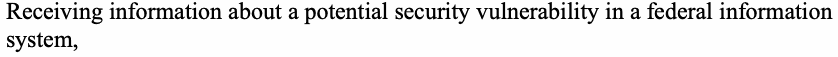
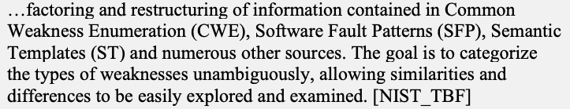
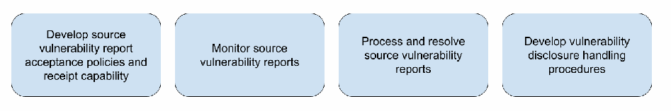
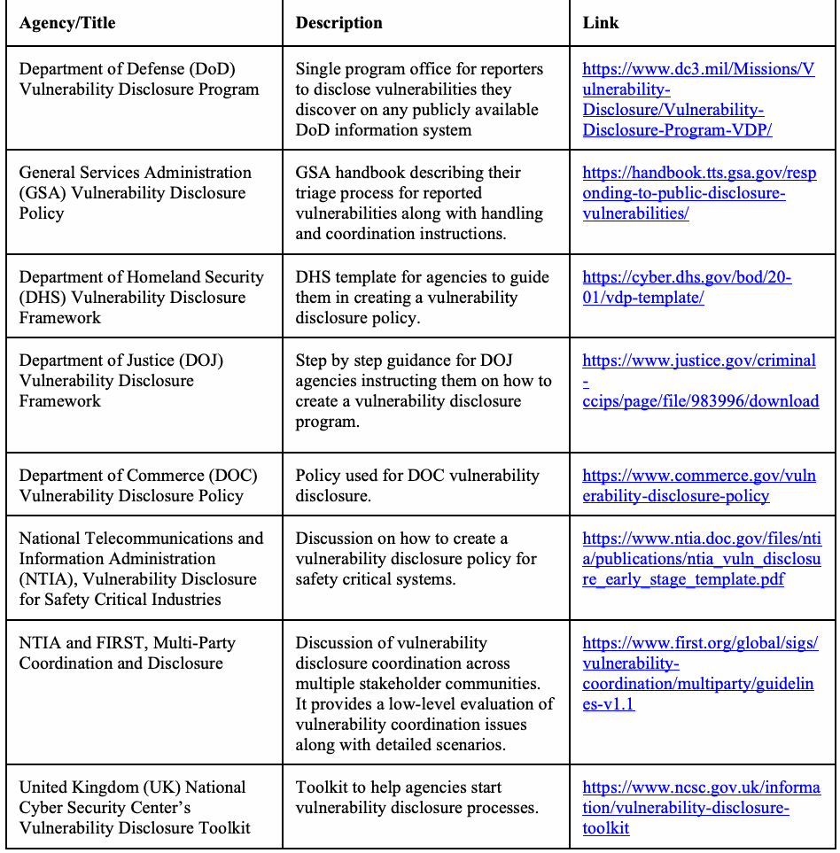

NIST SP 800-216 日本語訳
英語タイトル : Recommendations for Federal Vulnerability Disclosure Guidelines日本語タイトル : 連邦政府の脆弱性開示ガイドラインに関する推奨事項
公開日 : 2023-05-24
原文URL : https://csrc.nist.gov/pubs/sp/800/216/final
翻訳編集 : 自動生成（有志による非公式の日本語訳）, 原文取得日 : 2026-09-27, 訳文 : 313 / 315 ブロック
[要約] SP 800-216 は、連邦政府の脆弱性開示枠組みの確立、脆弱性報告の適切な取扱い、脆弱性の緩和・修正に関する連絡についての指針を推奨する文書です。連邦調整機関（FCB）を脆弱性開示の報告と監督の主要な窓口、脆弱性開示プログラム事務局（VDPO）を報告された脆弱性の特定・解決・勧告文の発行を担う運用単位と定め、両者の連携を説明します。2020年IoTサイバーセキュリティ改善法第5条に従い、ISO 29147 および 30111 などに整合させたもので、連邦政府の管理下にあるすべてのソフトウェア、ハードウェア、デジタルサービスに適用すべきとされます。
NIST Special Publication
米国国立標準技術研究所 特別刊行物
NIST SP 800-216
NIST SP 800-216
Recommendations for Federal
連邦政府向けの勧告
Vulnerability Disclosure
脆弱性開示
Guidelines
ガイドライン
Kim Schaffer Peter Mell Hung Trinh Isabel Van Wyk
Kim Schaffer、Peter Mell、Hung Trinh、Isabel Van Wyk
This publication is available free of charge from: https://doi.org/10.6028/NIST.SP.800-216
本刊行物は次のURLから無料で入手できる：https://doi.org/10.6028/NIST.SP.800-216
NIST Special Publication
米国国立標準技術研究所 特別刊行物
NIST SP 800-216
NIST SP 800-216
Recommendations for Federal
連邦政府向けの勧告
Vulnerability Disclosure
脆弱性開示
Guidelines
ガイドライン
Kim Schaffer Peter Mell Hung Trinh Isabel Van Wyk Computer Security Division
Kim Schaffer、Peter Mell、Hung Trinh、Isabel Van Wyk コンピュータセキュリティ部門
Information Technology Laboratory
情報技術研究所
This publication is available free of charge from: https://doi.org/10.6028/NIST.SP.800-216
本刊行物は次のURLから無料で入手できる：https://doi.org/10.6028/NIST.SP.800-216
May 2023
2023年5月
［米国商務省の紋章。公的な標章のため、この非公式サイトには掲載していません。原本 PDF を参照してください。］
U.S. Department of Commerce Gina M. Raimondo, Secretary
米国商務省 Gina M. Raimondo長官
National Institute of Standards and Technology
米国国立標準技術研究所
Laurie E. Locascio, NIST Director and Under Secretary of Commerce for Standards and Technology
Laurie E. Locascio、NIST所長兼商務省標準・技術担当次官
Certain commercial equipment, instruments, software, or materials, commercial or non-commercial, are identified in this paper in order to specify the experimental procedure adequately. Such identification does not imply recommendation or endorsement of any product or service by NIST, nor does it imply that the materials or equipment identified are necessarily the best available for the purpose.
この文書では、実験手順を適切に明示するため、特定の商用機器、計測器、ソフトウェアまたは材料（商用・非商用を問わない）を挙げています。こうした言及は、NISTがいずれかの製品またはサービスを推奨または承認することを意味するものではなく、挙げた材料や機器がその目的に対して必ずしも入手可能な最良のものであることを意味するものでもありません。
There may be references in this publication to other publications currently under development by NIST in accordance with its assigned statutory responsibilities. The information in this publication, including concepts and methodologies, may be used by federal agencies even before the completion of such companion publications. Thus, until each publication is completed, current requirements, guidelines, and procedures, where they exist, remain operative. For planning and transition purposes, federal agencies may wish to closely follow the development of these new publications by NIST.
本刊行物では、NISTが付与された法定責任に従って現在策定中の他の刊行物を参照する場合があります。本刊行物の情報（概念や方法論を含む）は、そうした関連刊行物が完成する前であっても連邦機関が利用できます。したがって、各刊行物が完成するまでは、現行の要件、ガイドライン、手順が存在する場合、それらが引き続き有効です。計画や移行のため、連邦機関はNISTによるこれらの新しい刊行物の策定状況を注視するとよいです。
Organizations are encouraged to review all draft publications during public comment periods and provide feedback to NIST. Many NIST cybersecurity publications, other than the ones noted above, are available at https://csrc.nist.gov/publications.
組織には、パブリックコメント期間中にすべての草案刊行物を確認し、NISTへ意見を提出することを推奨します。上記で言及したものを除き、多くのNISTサイバーセキュリティ刊行物は https://csrc.nist.gov/publications から入手できます。
Authority This publication has been developed by NIST in accordance with its statutory responsibilities under the Federal Information Security Modernization Act (FISMA) of 2014, 44 U.S.C. § 3551 et seq., Public Law (P.L.) 113-283. NIST is responsible for developing information security standards and guidelines, including minimum requirements for federal information systems, but such standards and guidelines shall not apply to national security systems without the express approval of appropriate federal officials exercising policy authority over such systems. This guideline is consistent with the requirements of the Office of Management and Budget (OMB) Circular A-130.
権限 本刊行物は、2014年連邦情報セキュリティ近代化法（FISMA）（合衆国法典第44編§3551以降、公法（P.L.）113-283）に基づくNISTの法定責任に従って策定されました。NISTは、連邦情報システムの最低要件を含む情報セキュリティ標準およびガイドラインを策定する責任を負います。ただし、これらの標準およびガイドラインは、国家安全保障システムに対する政策権限を行使する適切な連邦当局者の明示的な承認がない限り、当該システムには適用されないものとします。本ガイドラインは、行政管理予算局（OMB）通達A-130の要件に整合します。
Nothing in this publication should be taken to contradict the standards and guidelines made mandatory and binding on federal agencies by the Secretary of Commerce under statutory authority. Nor should these guidelines be interpreted as altering or superseding the existing authorities of the Secretary of Commerce, Director of the OMB, or any other federal official. This publication may be used by nongovernmental organizations on a voluntary basis and is not subject to copyright in the United States. Attribution would, however, be appreciated by NIST.
本刊行物のいかなる内容も、商務長官が法的権限に基づいて連邦機関に義務付けた標準およびガイドラインに反するものと解釈すべきではありません（should）。また、本ガイドラインを、商務長官、OMB長官、その他の連邦当局者が有する既存の権限を変更または置き換えるものと解釈すべきではありません（should）。本刊行物は非政府組織も任意に利用でき、米国内では著作権の対象ではありません。ただし、NISTへの出典表示を歓迎します。
NIST Technical Series Policies Copyright, Use, and Licensing Statements NIST Technical Series Publication Identifier Syntax
NIST技術シリーズの方針、著作権・利用・ライセンスに関する声明、NIST技術シリーズ刊行物識別子の構文
Publication History Approved by the NIST Editorial Review Board on 2023-05-17
刊行履歴 2023年5月17日にNIST編集審査委員会が承認
How to Cite this NIST Technical Series Publication: Schaffer K, Mell P, Trinh H, Van Wyk I (2023) Recommendations for Federal Vulnerability Disclosure Guidelines. (National Institute of Standards and Technology, Gaithersburg, MD), NIST (Special Publication) NIST SP 800-216. https://doi.org/10.6028/NIST.SP.800-216
本NIST技術シリーズ刊行物の引用方法：Schaffer K、Mell P、Trinh H、Van Wyk I（2023）『連邦政府の脆弱性開示ガイドラインに関する勧告』（米国国立標準技術研究所、メリーランド州ゲイザースバーグ）、NIST特別刊行物 NIST SP 800-216。https://doi.org/10.6028/NIST.SP.800-216
Author ORCID iDs Kim Schaffer: 0000-0003-3073-2395 Peter Mell: 0000-0003-2938-897X Hung Trinh: 0000-0002-3323-0836 Isabel Van Wyk: 0000-0001-8566-6829
著者のORCID iD Kim Schaffer：0000-0003-3073-2395、Peter Mell：0000-0003-2938-897X、Hung Trinh：0000-0002-3323-0836、Isabel Van Wyk：0000-0001-8566-6829
Contact Information sp800-216-comments@nist.gov
連絡先 sp800-216-comments@nist.gov
National Institute of Standards and Technology Attn: Computer Security Division, Information Technology Laboratory 100 Bureau Drive (Mail Stop 8930) Gaithersburg, MD 20899-8930
米国国立標準技術研究所 宛先：コンピュータセキュリティ部門、情報技術研究所 100 Bureau Drive（Mail Stop 8930）、Gaithersburg, MD 20899-8930
All comments are subject to release under the Freedom of Information Act (FOIA).
すべてのコメントは、情報公開法（FOIA）に基づく公開の対象となります。
Abstract
概要
Receiving reports on suspected security vulnerabilities in information systems is one of the best ways for developers and services to become aware of issues. Formalizing actions to accept, assess, and manage vulnerability disclosure reports can help reduce known security vulnerabilities. This document recommends guidance for establishing a federal vulnerability disclosure framework, properly handling vulnerability reports, and communicating the mitigation and/or remediation of vulnerabilities. The framework allows for local resolution support while providing federal oversight and should be applied to all software, hardware, and digital services under federal control.
情報システムにおけるセキュリティ脆弱性の疑いについて報告を受けることは、開発者やサービス提供者が問題を把握する最良の方法の一つです。脆弱性開示報告を受け付け、評価し、管理するための対応を正式化すれば、既知のセキュリティ脆弱性を減らすのに役立ちます。本書は、連邦政府の脆弱性開示枠組みの確立、脆弱性報告の適切な取扱い、脆弱性の緩和および／または修正に関する連絡についての指針を推奨します。この枠組みは、連邦政府による監督を確保しつつ、現場での解決支援を可能にするものであり、連邦政府の管理下にあるすべてのソフトウェア、ハードウェア、デジタルサービスに適用すべきです（should）。
Keywords
キーワード
advisory; Federal Coordination Body; findings report; source vulnerability report; vulnerability communication; Vulnerability Disclosure; Vulnerability Disclosure Policy; Vulnerability Disclosure Program Office; vulnerability processing; vulnerability tracking.
勧告文；連邦調整機関；調査結果報告書；脆弱性報告元レポート；脆弱性に関する連絡；脆弱性開示；脆弱性開示ポリシー；脆弱性開示プログラム事務局；脆弱性処理；脆弱性追跡。
Reports on Computer Systems Technology
コンピュータシステム技術に関する報告書
The Information Technology Laboratory (ITL) at the National Institute of Standards and Technology (NIST) promotes the U.S. economy and public welfare by providing technical leadership for the Nation’s measurement and standards infrastructure. ITL develops tests, test methods, reference data, proof of concept implementations, and technical analyses to advance the development and productive use of information technology. ITL’s responsibilities include the development of management, administrative, technical, and physical standards and guidelines for the cost-effective security and privacy of other than national security-related information in federal information systems. The Special Publication 800-series reports on ITL’s research, guidelines, and outreach efforts in information system security, and its collaborative activities with industry, government, and academic organizations.
米国国立標準技術研究所（NIST）の情報技術研究所（ITL）は、米国の計測・標準基盤に技術的なリーダーシップを発揮し、米国経済と公共福祉の向上を推進します。ITLは、情報技術の発展と有効活用を進めるため、試験、試験方法、参照データ、概念実証の実装、技術分析を開発します。ITLは、連邦情報システムにおける国家安全保障関連以外の情報を費用対効果の高い方法で保護し、プライバシーを確保するため、管理、運用、技術、物理面の標準およびガイドラインの策定を担います。特別刊行物800シリーズは、情報システムセキュリティに関するITLの研究、ガイドライン、普及活動、ならびに産業界、政府、学術機関との協力活動を報告します。
Patent Disclosure Notice
特許開示に関する通知
NOTICE: ITL has requested that holders of patent claims whose use may be required for compliance with the guidance or requirements of this publication disclose such patent claims to ITL. However, holders of patents are not obligated to respond to ITL calls for patents and ITL has not undertaken a patent search in order to identify which, if any, patents may apply to this publication. As of the date of publication and following call(s) for the identification of patent claims whose use may be required for compliance with the guidance or requirements of this publication, no such patent claims have been identified to ITL. No representation is made or implied by ITL that licenses are not required to avoid patent infringement in the use of this publication.
通知：ITLは、本刊行物の指針または要件への適合に使用が必要となる可能性のある特許請求の保有者に対し、当該特許請求をITLに開示するよう要請しました。ただし、特許保有者にはITLの特許照会に応じる義務はなく、ITLは本刊行物に適用される可能性のある特許があるとしてそれがどれであるかを特定するための特許調査を実施していません。刊行日時点で、本刊行物の指針または要件への適合に使用が必要となる可能性のある特許請求の特定を求める照会を行った後も、そのような特許請求はITLに示されていません。本刊行物の利用において特許侵害を避けるためのライセンスが不要であると、ITLが明示または黙示に表明するものではありません。
Table of Contents
目次
List of Figures
図一覧
Acknowledgments
謝辞
The authors would like to thank Tanya Brewer for her advice and support.
著者らは、助言と支援を提供してくれたTanya Brewer氏に謝意を表します。
Executive Summary
エグゼクティブサマリー
This document provides a guideline for managing vulnerability disclosure for information systems within the Federal Government. The document follows the IoT Cybersecurity Improvement Act of 2020, Public Law 116-207, Section 5 [CYB_IMPR_ACT], which directs NIST to provide guidelines:
本書は、連邦政府内の情報システムに関する脆弱性開示を管理するためのガイドラインを提供します。本書は、2020年IoTサイバーセキュリティ改善法（Public Law 116-207）第5条 [CYB_IMPR_ACT] に従うものであり、同条はNISTに次のガイドラインの提供を指示している：
(1)for the reporting, coordinating, publishing, and receiving information about –
(1)次に関する情報の報告、調整、公表、受領について –
a.a security vulnerability relating to information systems owned or controlled by an agency (including Internet of Things devices owned or controlled by an agency); and
a.機関が所有または管理する情報システム（機関が所有または管理するモノのインターネット（IoT）デバイスを含む）に関するセキュリティ脆弱性、および
b.the resolution of such security vulnerability; and
b.当該セキュリティ脆弱性の解決、ならびに
(2)for a contractor providing to an agency an information system (including an Internet of Things device) and any subcontractor thereof at any tier providing such information system to such contractor, on –
(2)機関に情報システム（IoTデバイスを含む）を提供する請負業者、およびその請負業者に当該情報システムを提供するあらゆる階層の下請業者に対する、次の事項について –
a.receiving information about a potential security vulnerability relating to the information system; and
a.当該情報システムに関する潜在的なセキュリティ脆弱性についての情報の受領、および
b.disseminating information about the resolution of a security vulnerability relating to the information system.
b.当該情報システムに関するセキュリティ脆弱性の解決についての情報の周知。
The guidelines published under subsection (a) shall –
(a)項に基づいて公表されるガイドラインは、次を満たさなければならない –
(1)to the maximum extent practicable, be aligned with industry best practices and Standards 29147 and 30111 of the International Standards Organization (or any successor standard) or any other appropriate, relevant, and widely-used standard;
(1)実行可能な最大限の範囲で、業界のベストプラクティス、国際標準化機構の規格29147および30111（またはその後継規格）、もしくはその他の適切で関連性があり広く使用されている規格に整合していること。
(2)incorporate guidelines on –
(2)次に関するガイドラインを組み込むこと –
a.receiving information about a potential security vulnerability relating to an information system owned or controlled by an agency (including an Internet of Things device); and
a.機関が所有または管理する情報システム（IoTデバイスを含む）に関する潜在的なセキュリティ脆弱性についての情報の受領、および
b.disseminating information about the resolution of a security vulnerability relating to an information system owned or controlled by an agency (including an Internet of Things device); and
b.機関が所有または管理する情報システム（IoTデバイスを含む）に関するセキュリティ脆弱性の解決についての情報の周知。ならびに
(3)be consistent with the policies and procedures produced under section 2009(m) of the Homeland Security Act of 2002 (6 U.S.C. 659(m)).
(3)2002年国土安全保障法第2009条(m)（6 U.S.C. 659(m)）に基づいて作成された方針および手順と整合していること。
This document defines the Federal Coordination Body (FCB) as the primary interface for vulnerability disclosure reporting and oversight. It also defines Vulnerability Disclosure Program Offices (VDPOs), which should be part of the information technology security offices (ITSOs) closest to the products and services provided. The FCB and VDPOs work together to address vulnerability disclosure in the Federal Government.
本書は、連邦調整機関（FCB）を、脆弱性開示の報告と監督のための主要な窓口と定義します。また、脆弱性開示プログラム事務局（VDPO）も定義します。VDPOは、提供される製品およびサービスに最も近い情報技術セキュリティ部門（ITSO）の一部とすべきです。FCBとVDPOは連携して、連邦政府における脆弱性開示に対処します。
U.S. Government Vulnerability Disclosure
米国政府による脆弱性開示
Thousands of security vulnerabilities in computer software and systems are discovered and publicly disclosed every year. Likely, even more are discovered by developers and quietly fixed without anyone ever being aware. In 2021 alone, there were over 20,000 new vulnerabilities reported to the NIST National Vulnerability Database [NVD]. Vulnerabilities are discovered by a variety of sources. Developers of software may find security bugs in already deployed code. Security researchers and penetration testers may find vulnerabilities by scanning or manually testing software and accessible systems (following published rules of behavior). While identifying an issue, users of systems may stumble across a vulnerability. Malicious actors may seek out unknown or unpublished vulnerabilities and use them in malware. Evidence of these attacks may then be discovered and analyzed by security experts, resulting in an identified vulnerability being reported. Regardless of who finds these vulnerabilities, it is critical that they are reported so that the owners of vulnerable software and systems can resolve or identify ways to mitigate the reported vulnerabilities. In many cases, owners should issue advisories to notify users of any actions to be taken (e.g., patches to be installed) or of potential damage to systems (i.e., potential consequences of the vulnerability having existed). International standard [ISOIEC_29147] provides guidance for coordinating the reporting of vulnerabilities and the creation of advisories to notify the public. It is designed to work in coordination with [ISOIEC_30111], which addresses the process of handling a reported vulnerability. Relevant topics in both ISO/IEC 29147 and ISO/IEC 30111 are referenced within this guidance. Hereafter, these two standards are referred to as ‘the ISO/IEC standards’ or simply ‘the standards.’ NIST has been directed under the Cybersecurity Improvement Act of 2020 [CYB_IMPR_ACT] to create guidelines for vulnerability disclosure for federal agencies in alignment with both ISO/IEC standards. Per the legislation, this document provides guidelines for:
コンピュータソフトウェアやシステムのセキュリティ脆弱性は、毎年数千件が発見され、公に開示されています。おそらく、さらに多くの脆弱性が開発者によって発見され、誰にも知られないままひそかに修正されています。2021年だけでも、2万件を超える新たな脆弱性がNISTのNational Vulnerability Database [NVD]に報告されました。脆弱性はさまざまな主体によって発見されます。ソフトウェアの開発者は、すでに配備されたコードにセキュリティバグを見つけることがあります。セキュリティ研究者や侵入テスト担当者は、（公表された行動規則に従って）ソフトウェアやアクセス可能なシステムを走査または手動で試験することにより、脆弱性を見つけることがあります。システムの利用者は、ある問題を特定する過程で偶然脆弱性に行き当たることがあります。悪意ある行為者は、未知または未公表の脆弱性を探し出し、マルウェアに利用することがあります。その後、こうした攻撃の証拠がセキュリティ専門家によって発見・分析され、その結果、特定された脆弱性が報告されることがあります。誰がこれらの脆弱性を発見するかにかかわらず、脆弱なソフトウェアやシステムの所有者が、報告された脆弱性を解決し、または緩和する方法を特定できるよう、脆弱性が報告されることが極めて重要です。多くの場合、所有者は、とるべき措置（例：適用すべきパッチ）またはシステムへの潜在的な損害（すなわち、脆弱性が存在していたことによる潜在的な結果）を利用者に通知するために、勧告文を発行すべきです。国際標準[ISOIEC_29147]は、脆弱性の報告の調整および公衆に通知するための勧告文の作成に関する指針を示しています。同標準は、報告された脆弱性の取扱プロセスを扱う[ISOIEC_30111]と連携して機能するよう設計されています。本ガイダンスでは、ISO/IEC 29147およびISO/IEC 30111の両方の関連事項を参照しています。以降、これら2つの標準を「ISO/IEC標準」または単に「標準」と呼びます。NISTは、2020年サイバーセキュリティ改善法[CYB_IMPR_ACT]に基づき、両ISO/IEC標準に整合する連邦機関向けの脆弱性開示ガイドラインを作成するよう指示されています。同法に従い、本書は次の事項に関するガイドラインを示します。
1.Receiving information about a potential security vulnerability in a federal information system,
原本PDFの抜粋画像

1.連邦情報システムの潜在的なセキュリティ脆弱性情報の受領、
2.Coordinating with stakeholders, and
2.利害関係者との調整、および
3.Resolving and disseminating information about such security vulnerabilities.
3.当該セキュリティ脆弱性の解決、および当該セキュリティ脆弱性に関する情報の配布。
In order to define vulnerability disclosure guidelines, this document describes a framework for the U.S. Government to establish and maintain a unified and flexible collection and management process for vulnerability disclosures. The framework can be applied at all levels, from a central oversight body down to the individual program offices. The framework can also be applied to all government-developed, commercial, and open-source software used by government systems. All government data and information systems that include development or support services benefit from vulnerability disclosure program coverage.
脆弱性開示ガイドラインを定めるため、本書は米国政府が脆弱性開示情報を一元的かつ柔軟に収集・管理するプロセスを確立し、維持する枠組みを示します。この枠組みは中央監督機関から個々のプログラム事務局まで、あらゆる階層に適用できます。また、政府システムで使用する政府開発、商用、オープンソースのすべてのソフトウェアにも適用できます。開発またはサポートサービスを含むすべての政府データおよび情報システムは、脆弱性開示プログラムの適用から便益を得ます。
![Fig. 1. High-level federal vulnerability disclosure framework and information flow. A large rounded box titled “Federal Vulnerability Disclosure Program” contains two boxes, “Federal Coordination Body” above and “Vulnerability Disclosure Program Office(s)” below, joined by a dotted double-headed arrow. A dashed arrow goes from “Reporter” on the left into the program box, and a solid arrow goes from the program box to “Public” on the right. A dotted double-headed arrow joins the program box and “External Coordinators” below it. A legend at the bottom left shows a dashed arrow for “Source vulnerability report”, a dotted double-headed arrow for “Findings report”, and a solid arrow for “Advisory”.](assets/216/p0012-figure-01.png)
図1. 連邦脆弱性開示枠組みの概要と情報の流れ。「Federal Vulnerability Disclosure Program」（連邦脆弱性開示プログラム）と題した大きな角丸の枠の中に、上に「Federal Coordination Body」（連邦調整機関）、下に「Vulnerability Disclosure Program Office(s)」（脆弱性開示プログラム事務局）の2つの箱があり、点線の両方向矢印で結ばれている。左の「Reporter」（報告者）からプログラムの枠へ破線の矢印が、プログラムの枠から右の「Public」（公衆）へ実線の矢印が向かう。プログラムの枠とその下の「External Coordinators」（外部調整者）は点線の両方向矢印で結ばれている。左下の凡例は、破線の矢印が「Source vulnerability report」（脆弱性報告元レポート）、点線の両方向矢印が「Findings report」（調査結果報告書）、実線の矢印が「Advisory」（勧告文）であることを示す。
Fig. 1. High-level federal vulnerability disclosure framework and information flow
図1. 連邦脆弱性開示枠組みの概要と情報の流れ
These guidelines focus on assessing risk from identified vulnerabilities and encourage all organizations throughout the Federal Government to collect and evaluate vulnerability disclosures for maximum communication and accountability. Creating efficient and effective vulnerability disclosure programs can help minimize the unintended exposure of government and private information, the corruption of data, and the loss of services. This document leverages the ISO/IEC standards in defining a framework for vulnerability disclosure designed specifically for the United States Federal Government. Its implementation specifies actors working at the federal, agency, and information system levels and how they should coordinate in performing vulnerability disclosure. This guidance also aligns with and leverages Binding Operational Directive [BOD20-01], which was released in 2020 and requires federal agencies to publish vulnerability disclosure policies that enable users to report vulnerabilities in Federal Government systems. Figure 1 provides a high-level view of the framework that shows the major actors and information flows. The two primary government entities are the Federal Coordination Body (FCB) and the Vulnerability Disclosure Program Offices (VDPOs). Other actors defined in the framework include the reporter, the public, and the external coordinator, all of whom are described more thoroughly in later sections of this document. The FCB is a group of cooperating members that collectively provide flexible, high-level vulnerability disclosure coordination among government agencies. The group represents the primary mechanism by which vulnerabilities should be tracked by the Government and for which vulnerability advisories should be produced. Although some overlap may occur, FCB members will have distinct areas of responsibility that reflect typical dividing lines in the Government
本ガイドラインは、特定された脆弱性に起因するリスクの評価に重点を置き、コミュニケーションと説明責任を最大化するために、連邦政府全体のすべての組織が脆弱性開示情報を収集・評価することを奨励します。効率的で効果的な脆弱性開示プログラムを構築することは、政府および民間の情報の意図しない露出、データの破損、サービスの喪失を最小限に抑えるのに役立ち得ます。本書は、ISO/IEC標準を活用して、米国連邦政府向けに特化して設計された脆弱性開示の枠組みを定義します。その実装では、連邦、機関、情報システムの各レベルで活動する主体と、それらの主体が脆弱性開示を実施する際にどのように連携すべきかを定めます。本ガイダンスは、拘束的運用指令[BOD20-01]にも整合し、これを活用します。同指令は2020年に発出されたもので、連邦機関に対し、利用者が連邦政府システムの脆弱性を報告できるようにする脆弱性開示ポリシーの公開を求めています。図1は、主要な主体と情報の流れを示す、枠組みの概要図です。主要な政府主体は、連邦調整機関（FCB）と脆弱性開示プログラム事務局（VDPO）の2つです。枠組みで定義されるその他の主体には、報告者、公衆、外部調整者があり、いずれも本書の後続の節でより詳しく説明します。FCBは、政府機関間の柔軟で高水準な脆弱性開示調整を共同で提供する、協力し合うメンバーのグループです。このグループは、政府が脆弱性を追跡すべき、また脆弱性の勧告文を作成すべき主要な仕組みです。多少の重複はあり得るものの、FCBメンバーはそれぞれ異なる責任領域を持つことになります。その責任領域は、政府内の典型的な区分
(e.g., between the military and civilian sectors) and represent the current state of existing vulnerability disclosure coordination capabilities. A VDPO represents the operational unit that is responsible for information technology (IT) systems and coordinating with other actors to identify, resolve, and issue advisories on reported vulnerabilities. Ideally, it is part of an existing vulnerability management program closest to the affected products and/or services. Agencies may also consider sharing resources between coordinating offices to alleviate the shortages of necessary vulnerability or technology expertise, while maintaining VDPO services adjacent to the products and services provided. Large organizations may choose to utilize a hierarchical structure for each sub-agency or division to coordinate vulnerability reporting between the FCB and VDPOs. Additionally, an agency may have many VDPOs since implementation technologies, support levels, and mission requirements may vary widely. For simplicity, this document will primarily focus on each operational unit having a single VDPO. Note that a particular vulnerability may affect a system that supports multiple services across multiple agencies. When a system serves multiple agencies, the other agencies help determine how and when to address the vulnerability. The relevant system owner will work with the impacted agencies to coordinate and appropriately address a vulnerability. The responsibility for every vulnerability should reside in a particular system covered by a single, lowest-level VDPO. A “reporter” is an entity who submits a source vulnerability report to a government organization. The reporter may be an entity outside of the Government, within the Government, or even within the specific system that has the vulnerability. In any case, when a user of a government system finds a security-related vulnerability in a deployed government system, the reporting, resolution, and possible public announcement of that vulnerability should follow these guidelines. The “public” is anyone who might be impacted by or needs to take action for (e.g., mitigation or remediation) a specific vulnerability. For some vulnerabilities, the public might be the entire world (e.g., when an advisory about a vulnerability is placed on a public website like NVD). At other times, the public might be more constrained, such as the user base of a government system. The “external coordinator” (EC) refers to any vulnerability disclosure entity not within the FCB or the VDPO that receives the source vulnerability report. The EC may be a private, academic, or non-profit vulnerability program with no relation to the Government or be another VDPO within the Government. It also may be the developer of commercial or open-source software that is used in or by the government system. Existing vulnerability disclosure programs within the Federal Government predate these guidelines, and the publicly available policies and guidelines for these programs appear to be largely compliant with the ISO/IEC standards. Appendix C provides a partial list of such programs, as well as links to their websites, policies, and procedures. NIST also maintains a list of examples and actual policies and procedures on the Vulnerability Disclosure Guidance project webpage.1 Although this site is updated as more resources become available, it is not intended to be an exhaustive list of all government VDPOs and FCB guidance.
（例：軍事部門と民間部門の間の区分）を反映し、既存の脆弱性開示調整能力の現状を表すものです。VDPOは、情報技術（IT）システムを担当し、他の主体と連携して、報告された脆弱性を特定し、解決し、それに関する勧告文を発行する責任を負う運用単位です。理想的には、VDPOは、影響を受ける製品および／またはサービスに最も近い既存の脆弱性管理プログラムの一部です。機関は、提供する製品およびサービスに隣接してVDPOサービスを維持しつつ、必要な脆弱性または技術の専門知識の不足を緩和するために、調整部門間でリソースを共有することを検討してもよいです。大規模な組織は、FCBとVDPOの間の脆弱性報告を調整するために、下位機関または部門ごとに階層構造を利用することを選択してもよいです。さらに、実装技術、サポート水準、任務要件は大きく異なり得るため、一つの機関が多数のVDPOを持つこともあります。簡単のため、本書は主として、各運用単位が単一のVDPOを持つ場合に焦点を当てます。なお、特定の脆弱性が、複数の機関にまたがる複数のサービスを支えるシステムに影響する場合があります。あるシステムが複数の機関にサービスを提供している場合、他の機関は、その脆弱性にいつ、どのように対処するかの決定に協力します。関係するシステム所有者は、影響を受ける機関と協力して調整を行い、脆弱性に適切に対処します。すべての脆弱性についての責任は、単一の最下位レベルのVDPOが対象とする特定のシステムに帰属すべきです。「報告者」とは、政府組織に脆弱性報告元レポートを提出する主体です。報告者は、政府外の主体、政府内の主体、さらには脆弱性を有する当該システム内の主体である場合があります。いずれの場合でも、政府システムの利用者が配備済みの政府システムにセキュリティ関連の脆弱性を見つけたときは、その脆弱性の報告、解決、および場合によっては公表は、本ガイドラインに従うべきです。「公衆」とは、特定の脆弱性の影響を受ける可能性のある者、または特定の脆弱性について措置（例：緩和または修正）をとる必要のある者すべてです。脆弱性によっては、公衆は全世界となり得ます（例：脆弱性に関する勧告文がNVDのような公開ウェブサイトに掲載される場合）。別の場合には、公衆は、政府システムの利用者層のように、より限定されることがあります。「外部調整者」（EC）とは、脆弱性報告元レポートを受領するFCBまたはVDPOに属さない、あらゆる脆弱性開示主体を指します。ECは、政府と関係のない民間、学術、もしくは非営利の脆弱性プログラムである場合もあれば、政府内の別のVDPOである場合もあります。また、政府システム内で、または政府システムによって使用される商用またはオープンソースのソフトウェアの開発者である場合もあります。連邦政府内の既存の脆弱性開示プログラムは本ガイドラインより前から存在しており、これらのプログラムについて公開されているポリシーおよびガイドラインは、ISO/IEC標準に概ね準拠しているように見受けられます。付録Cは、そのようなプログラムの一部の一覧と、それらのウェブサイト、ポリシー、手順へのリンクを示します。NISTはまた、脆弱性開示ガイダンスのプロジェクトウェブページにおいて、例ならびに実際のポリシーおよび手順の一覧を維持しています。1このサイトは、より多くのリソースが利用可能になるにつれて更新されますが、政府のすべてのVDPOおよびFCBガイダンスを網羅した一覧となることを意図したものではありません。
Usage of Document Terminology
文書内の用語の使い方
In the context of this document, the term “vulnerability” refers to a security vulnerability in an information system. It does not refer to other kinds of vulnerabilities that may pertain to, for example, physical security, economic security, or foreign policy issues. The terms “should” and “should not” indicate that – among several possibilities – one is recommended as particularly suitable without mentioning or excluding others, that a certain course of action is preferred but not necessarily required, or that (in the negative form) a certain possibility or course of action is discouraged but not prohibited. The terms “may” and “need not” indicate a course of action permissible within the limits of the publication. The terms “can” and “cannot” indicate a possibility and capability, whether material, physical, or causal. This document leverages the ISO/IEC standards as much as possible in forming vulnerability disclosure guidelines for the Federal Government. Federal vulnerability disclosure programs should follow, to the extent possible, the terminology used in this document to facilitate interoperability in communications (e.g., using the same names for the various actors), as well as for internal efforts of identification, assessment, and the minimization or elimination of vulnerabilities. When a needed term is not defined in this document but does exist in the ISO/IEC standards, the term from the standards should be used. A glossary of the major terms used in this document is provided in Appendix B.
本書の文脈において、「脆弱性」という用語は、情報システムにおけるセキュリティ脆弱性を指します。たとえば物理的セキュリティ、経済安全保障、外交政策上の問題に関わり得る、他の種類の脆弱性を指すものではありません。「should」および「should not」という用語は、複数の可能性の中で、他の可能性に言及することも排除することもなく、ある一つが特に適切なものとして推奨されること、ある行動方針が望ましいが必ずしも要求されるものではないこと、または（否定形の場合）ある可能性もしくは行動方針が推奨されないが禁止はされないことを示します。「may」および「need not」という用語は、本刊行物の範囲内で許容される行動方針を示します。「can」および「cannot」という用語は、実質的、物理的、または因果的であるかを問わず、可能性および能力を示します。本書は、連邦政府向けの脆弱性開示ガイドラインを策定するにあたり、可能な限りISO/IEC標準を活用します。連邦政府の脆弱性開示プログラムは、コミュニケーションにおける相互運用性を促進するため（例：各主体に同じ名称を用いる）、ならびに脆弱性の特定、評価、および最小化または排除という内部の取組のために、可能な範囲で本書で使用する用語に従うべきです。必要な用語が本書で定義されていないがISO/IEC標準には存在する場合は、標準の用語を使用すべきです。本書で使用する主要な用語の用語集を付録Bに示します。
Federal Vulnerability Disclosure Coordination Body
連邦脆弱性開示調整機関
The Federal Coordination Body (FCB) is a group of cooperating government entities that operate at the federal level to ensure vulnerability disclosure coordination services for all government agencies and may also provide services to non-government industry sectors (e.g., health care). Members of the FCB utilize their resources and capabilities to:
連邦調整機関（FCB）は、すべての政府機関に対する脆弱性開示の調整サービスを確保するために連邦レベルで活動する、協力し合う政府主体のグループであり、政府外の産業分野（例：医療）にもサービスを提供する場合があります。FCBのメンバーは、自らの資源と能力を活用して次のことを行います。
•Receive source vulnerability reports,
•脆弱性報告元レポートを受領します。
•Coordinate and investigate to identify vulnerable systems,
•脆弱性のあるシステムを特定するために調整・調査します。
•Route findings reports to appropriate entities, and
•調査結果報告書を適切な主体に転送します。
•Produce advisories about vulnerabilities.
•脆弱性に関する勧告文を作成します。
The coordination process is summarized here and described in detail in the subsequent sections.
調整プロセスの概要をここに示し、以降の各節で詳述します。
![Fig. 2. Federal vulnerability disclosure coordination process. At the top, four boxes joined by lines form a row: “Develop the capability to receive vulnerability reports”, “Determine the scope of operations”, “Establish federal and industry contacts” and, in a lighter shade, “(Optional) Establish technical analysis capability”. Below, a flowchart: “Receive source vulnerability report” → “Prioritize report” → decision “Potential vulnerability in government system?”. “No” (dashed arrow) leads left to “Inform industry vulnerability coordination group and/or software developer”. “Yes” (dashed arrow) leads right to “Identify potentially vulnerable systems” → “Work with VDPOs to identify potentially vulnerable software” → decision “Potential vulnerability in government-developed software?”. From this decision, “No” leads by a dashed line to a vertical dashed line on the left, which has arrows up to “Inform industry vulnerability coordination group and/or software developer” and right to “Potentially produce government vulnerability advisory”. “Yes” (dashed arrow) leads down to “Submit findings report to applicable VDPO” → “Potentially assist VDPO in verifying and remediating vulnerability” → “Potentially produce government vulnerability advisory”. A box “VDPO reports non-FCB-handled vulnerability” at the lower right also has an arrow to “Potentially produce government vulnerability advisory”.](assets/216/p0015-figure-02.png)
図2. 連邦脆弱性開示の調整プロセス。上部には線で結ばれた4つの箱が横に並ぶ。「Develop the capability to receive vulnerability reports」（脆弱性報告を受け付ける能力の整備）、「Determine the scope of operations」（業務範囲の決定）、「Establish federal and industry contacts」（連邦政府および産業界の連絡先の確立）、薄い色の「(Optional) Establish technical analysis capability」（（任意）技術分析能力の確立）である。その下は流れ図で、「Receive source vulnerability report」（脆弱性報告元レポートの受領）→「Prioritize report」（レポートの優先順位付け）→判断「Potential vulnerability in government system?」（政府システムに脆弱性の可能性があるか）と進む。「No」（破線の矢印）は左の「Inform industry vulnerability coordination group and/or software developer」（産業界の脆弱性調整グループおよび／またはソフトウェア開発者への通知）へ向かう。「Yes」（破線の矢印）は右の「Identify potentially vulnerable systems」（脆弱性の可能性があるシステムの特定）→「Work with VDPOs to identify potentially vulnerable software」（VDPOと協力して脆弱性の可能性があるソフトウェアを特定）→判断「Potential vulnerability in government-developed software?」（政府開発ソフトウェアに脆弱性の可能性があるか）と進む。この判断の「No」は破線で左側の縦の破線につながり、そこから上の「Inform industry vulnerability coordination group and/or software developer」へ、また右の「Potentially produce government vulnerability advisory」（政府の脆弱性勧告文の作成の可能性）へ矢印が向かう。「Yes」（破線の矢印）は下の「Submit findings report to applicable VDPO」（該当するVDPOへの調査結果報告書の提出）→「Potentially assist VDPO in verifying and remediating vulnerability」（VDPOによる脆弱性の検証と修正の支援の可能性）→「Potentially produce government vulnerability advisory」と進む。右下の「VDPO reports non-FCB-handled vulnerability」（FCBが扱っていない脆弱性のVDPOによる報告）からも「Potentially produce government vulnerability advisory」へ矢印が向かう。
Fig. 2. Federal vulnerability disclosure coordination process
図2. 連邦脆弱性開示の調整プロセス
Each FCB member should, at a minimum, perform the three high-level functions shown in Fig. 2. Prior to operation, the FCB members should have developed the capability to receive source vulnerability reports, determined the scope of their operations, and established federal and industry contacts. Some additionally support a technical analysis capability.
各FCBメンバーは、少なくとも図2に示す3つの高水準機能を実施すべきです。運用開始前に、FCBメンバーは脆弱性報告元レポートを受け付ける能力を整備し、業務範囲を定め、連邦政府および産業界の連絡先を確立しておくべきです。技術分析能力も備えているメンバーがあります。
The remainder of Fig. 2 addresses the operational aspects. In operation, the FCB receives the source vulnerability reports and investigates them to determine validity and prioritize resource allocations. Vulnerability reports that do not identify government-only systems may be routed to an industry vulnerability coordination group and/or be delivered directly to the appropriate EC, such as a software developer. The FCB works with the VDPO closest to the affected system to identify the specific vulnerability. If the vulnerable software or service is not government-owned, the FCB forwards the report to the appropriate developer or to an industry vulnerability coordination group. The FCB may then work with the relevant VDPO to produce an advisory about the impact of the vulnerability on applicable government systems. If the software or service is government-developed or supported, the FCB will submit a findings report to the applicable VDPO for vulnerability verification and remediation. The FCB will aid the relevant VDPO if requested and per resource availability. Finally, the FCB may publish an advisory on the vulnerability if the agency – more specifically, the relevant system owner – determines that the vulnerability may have a public impact. It is not expected that there will be a large number of FCB members. Rather, the FCB may include agency operational units with special mission expertise not aligned with existing FCB members. Each FCB member supports a defined subset of the Government, minimizing the overlap of scope as much as possible. In addition, the FCB members expend resources engaging and coordinating with industry to fix vulnerabilities within industry products that are used by the Government. Most agencies will leverage the services provided by an FCB member, will not themselves be part of the FCB, and will instead establish their own VDPOs to handle the vulnerabilities discovered within their own systems.
図2の残りの部分は運用面を扱います。運用時、FCBは脆弱性報告元レポートを受領し、その妥当性を判断しリソース配分の優先順位を付けるために調査します。政府専用システムを特定していない脆弱性報告は、産業界の脆弱性調整グループに転送され、および／またはソフトウェア開発者などの適切なECに直接届けられる場合があります。FCBは、影響を受けるシステムに最も近いVDPOと協力して、具体的な脆弱性を特定します。脆弱なソフトウェアまたはサービスが政府所有でない場合、FCBは報告を適切な開発者または産業界の脆弱性調整グループに転送します。その後、FCBは関係するVDPOと協力して、該当する政府システムに対する当該脆弱性の影響についての勧告文を作成する場合があります。ソフトウェアまたはサービスが政府によって開発またはサポートされている場合、FCBは、脆弱性の検証および修正のために、調査結果報告書を該当するVDPOに提出します。FCBは、要請があれば、リソースの利用可能性に応じて、関係するVDPOを支援します。最後に、機関（より具体的には、関係するシステム所有者）が、当該脆弱性が公衆に影響を及ぼす可能性があると判断した場合、FCBは当該脆弱性に関する勧告文を公開する場合があります。FCBメンバーが多数になることは想定されていません。むしろ、FCBには、既存のFCBメンバーとは重ならない特別な任務上の専門性を持つ機関の運用単位が含まれる場合があります。各FCBメンバーは、政府のうち定められた一部分を支援し、対象範囲の重複を可能な限り最小化します。加えて、FCBメンバーは、政府が使用する産業界の製品内の脆弱性を修正するために、産業界との関与および調整にリソースを費やします。ほとんどの機関は、FCBメンバーが提供するサービスを活用し、自らはFCBの一部とはならず、代わりに、自らのシステム内で発見された脆弱性を取り扱うために独自のVDPOを設置します。
Preparation
準備
FCB members need to develop several foundational policies and capabilities, including the ability to receive source vulnerability reports, coordinate securely with reporters, determine the scope of services for federal systems, and – optionally – develop a technical vulnerability analysis and mitigation team.
FCBメンバーは、脆弱性報告元レポートの受領、報告者との安全な連絡、連邦システムに対するサービス範囲の決定など、いくつかの基礎的なポリシーと能力を整備する必要があります。任意で、脆弱性の技術分析・緩和チームを設けてもよいです。
2.1.1. Create Source Vulnerability Report Receipt Capability
2.1.1. 脆弱性報告元レポートを受領する機能の構築
Each FCB member should develop the ability to receive source vulnerability reports from reporters, maintain a database of received reports, and engage in secure communications (e.g., using a report tracking system).2 The expectation for communication with the reporter should be established, including the initial acknowledgment, status updates, and agreed-upon method of communication. The actual receipt of a source vulnerability report may take multiple forms (e.g., email, web forms, or a phone hotline) and should be stated in a public policy. It is also recommended that a list of VDPOs supported by the FCB member along with a link to their external vulnerability disclosure policies be made publicly available. This allows the reporter to both choose where to send the report and know which VDPOs work with the FCB member. Section 3.2.1 provides guidance on the creation of vulnerability disclosure acceptance policies. Source vulnerability reports should include a description of the product or service affected; how the potential vulnerability can be identified, demonstrated, or reproduced; and what type of functional impact the vulnerability allows. Due to the sensitivity of the information, agencies should provide mechanisms for confidentially receiving additional information within the reports (e.g., web forms, bug or issue tracking systems, vulnerability reporting services, email addresses). To facilitate verification of the vulnerability, agencies should design reporting mechanisms for assessing the validity, technical severity, scope, and impact of vulnerabilities. This information could include:
各FCBメンバーは、報告者から脆弱性報告元レポートを受領し、受領したレポートのデータベースを維持し、安全な通信（例：報告追跡システムの使用）を行う能力を整備すべきです。2初回の受領確認、状況の更新、および合意した連絡方法を含め、報告者とのコミュニケーションに関する期待事項を定めておくべきです。脆弱性報告元レポートの実際の受領は、複数の形態（例：電子メール、ウェブフォーム、電話ホットライン）をとり得るものであり、公開ポリシーに明記すべきです。また、当該FCBメンバーが支援するVDPOの一覧を、それらの外部向け脆弱性開示ポリシーへのリンクとともに公開することが推奨されます。これにより、報告者は、レポートの送付先を選択できるとともに、どのVDPOが当該FCBメンバーと連携しているかを知ることができます。3.2.1節は、脆弱性開示の受理ポリシーの作成に関する指針を示します。脆弱性報告元レポートには、影響を受ける製品またはサービスの説明、潜在的な脆弱性をどのように特定、実証、または再現できるか、および当該脆弱性がどのような種類の機能上の影響を可能にするかを含めるべきです。情報の機微性のため、機関は、レポート内の追加情報を秘密裏に受領するための仕組み（例：ウェブフォーム、バグまたは課題の追跡システム、脆弱性報告サービス、電子メールアドレス）を提供すべきです。脆弱性の検証を容易にするため、機関は、脆弱性の妥当性、技術的深刻度、範囲、および影響を評価するための報告の仕組みを設計すべきです。この情報には次のものが含まれ得ます。
•Product or service name and affected versions
•製品またはサービスの名称と影響を受けるバージョン
•An identified host or its network interface
•特定されたホストまたはそのネットワークインターフェース
•Class or type of vulnerability, optionally using a taxonomy like CWE (Common Weakness Enumeration)
•脆弱性のクラスまたは種類。必要に応じてCWE（共通脆弱性タイプ一覧）のような分類体系を用います。
•Possible root cause (or CVE if known)
•考えられる根本原因（既知の場合はCVE）
•Proof-of-concept code or other substantial evidence
•概念実証コードまたはその他の十分な証拠
•Tools and steps to reproduce the vulnerable behavior
•脆弱な挙動を再現するためのツールと手順
•Impact and severity estimate
•影響と深刻度の推定
•Scope assessment and other products, components, services, or vendors thought to be affected
•対象範囲の評価、および影響を受けると思われるその他の製品、コンポーネント、サービス、ベンダー
•Disclosure plans (specifically, embargo and publication timelines)
•開示計画（特に、公開猶予期間と公表時期）
When applicable, the source vulnerability report should also indicate whether the vulnerability affects multiple systems, their commonality, and if the other system owners have been notified.
該当する場合、脆弱性報告元レポートには、脆弱性が複数のシステムに影響するか、それらのシステムに共通性があるか、他のシステム所有者に通知済みかも示すべきです。
2.1.2. Determine Scope and Obtain Contacts
2.1.2. 対象範囲の決定と連絡先の確保
Prior to the receipt of any vulnerabilities, each FCB member will determine which government VDPOs fall within the scope of their services. The FCB member will then obtain and maintain a list of VDPO contacts within the relevant government agencies that receive and handle source vulnerability reports. Each FCB member should develop the capability to forward reports to VDPOs and to engage in ongoing communications to enable coordination. Lastly, FCB members may engage with industry-tied vulnerability coordination entities (e.g., CERT/CC3) to facilitate coordination with non-government software and/or service providers.
脆弱性を受領する前に、各FCBメンバーは担当範囲に含まれる政府のVDPOを特定します。その後、該当機関内で脆弱性報告元レポートを受領・処理するVDPOの連絡先一覧を入手し、維持します。各メンバーは、調整のためにVDPOへ報告を転送し、継続的に連絡する能力を整備すべきです。最後に、FCBメンバーは政府外のソフトウェアやサービス提供者との調整を促進するため、CERT/CC3など産業界と結びついた脆弱性調整機関と連携してもよいです。
2.1.3. Develop Technical Analysis Capability
2.1.3. 技術分析能力の整備
The FCB may develop technical vulnerability analysis and remediation capabilities to triage the importance of incoming source vulnerability reports, verify the existence of reported vulnerabilities, and assist the VDPO closest to an affected system with analysis and remediation efforts. They could be used, for example, to address severe vulnerabilities applicable to multiple VDPOs and to assist smaller VDPOs that may not have sufficient resources to assess and remediate vulnerabilities.
FCBは、受領した脆弱性報告元レポートの重要度をトリアージし、報告された脆弱性の存在を検証し、影響を受けるシステムに最も近いVDPOの分析・修正作業を支援するため、技術的な脆弱性分析・修正能力を整備してもよいです。たとえば、複数のVDPOに関係する深刻な脆弱性への対応や、評価・修正に十分なリソースを持たない小規模VDPOの支援に利用できます。
Receive Source Vulnerability Report
脆弱性報告元レポートの受領
An FCB member receives source vulnerability reports from reporters who are both internal and external to the Government using the policies and capabilities developed in Section 2.1. If the report is not within scope or cannot be verified, the FCB member should inform the reporter and/or forward the report to an appropriate FCB member or EC. If the report is determined to be within scope, a dialogue should be maintained between the FCB member and the reporter to enable the exchange of additional and clarifying information. If the reporter intends to publicly announce the vulnerability, the FCB can work with them to develop a disclosure schedule (e.g., coordinating public disclosure with patch distribution). While the FCB receives source vulnerability reports for all government systems, a reporter may choose to report directly to a vulnerable system’s VDPO.4 In this case, the applicable VDPO will coordinate with the FCB (as appropriate) to notify other impacted agencies, request technical assistance, and produce advisories. VDPOs also provide a copy of all received reports to their corresponding FCB member for entry into the FCB reporting database.
FCBメンバーは、2.1節で整備したポリシーと能力を用いて、政府内外の報告者から脆弱性報告元レポートを受け取ります。報告が対象範囲外である、または検証できない場合、FCBメンバーは報告者に知らせる、および／または適切なFCBメンバーかECへ転送すべきです。対象範囲内と判断した場合、追加情報や明確化した情報を交換できるよう、メンバーと報告者の対話を維持すべきです。報告者が脆弱性の公開発表を意図する場合、FCBは報告者と協力して、パッチ配布に合わせた公開など、開示日程を策定できます。FCBはすべての政府システムの報告を受け付けますが、報告者は脆弱性のあるシステムのVDPOへ直接報告してもよいです。4その場合、該当するVDPOは必要に応じてFCBと調整し、影響を受ける他機関への通知、技術支援の要請、勧告文の作成を行います。VDPOは受領したすべての報告の写しを、FCB報告データベースに登録するため、担当FCBメンバーにも提供します。
Triage and Prioritize Source Vulnerability Report
脆弱性報告元レポートのトリアージと優先順位付け
FCB members should prioritize source vulnerability reports depending on the vulnerability’s apparent:
FCBメンバーは、脆弱性の次の推定要素に基づいて、脆弱性報告元レポートに優先順位を付けるべきです。
•Ease of exploitation,
•悪用の容易さ
•Exposure of government systems to the vulnerability, and
•政府システムが脆弱性にさらされる程度、および
•Technical severity of impact on the users of the affected software or services.
•影響を受けるソフトウェアまたはサービスの利用者に対する技術的な深刻度。
For calculating vulnerability severity and ease of exploitation, FCB members should use a documented vulnerability scoring methodology (e.g., the Common Vulnerability Scoring System [CVSS]5). This score should be customized with the environmental factors of expected government system exposure and user impact in order to calculate the priority of all received reports. Coordination with the VDPOs by the FCB may be required to determine the likely scope of government resources impacted by the reported vulnerability. This prioritization optimizes resource allocation and determines the urgency for addressing a report. A vulnerability in a software library or other shared resource may affect multiple government systems with differing levels of technical severity. For the purposes of prioritization, the highest calculated severity6 should be used.
脆弱性の深刻度と悪用の容易さを算定する際、FCBメンバーは、共通脆弱性評価システム（CVSS）[CVSS]5など、文書化された脆弱性スコアリング手法を用いるべきです。すべての報告の優先順位を決めるため、想定される政府システムの曝露状況や利用者への影響など、環境要因を反映してスコアを調整すべきです。報告された脆弱性によって影響を受ける政府リソースの範囲を把握するには、FCBがVDPOと調整する必要がある場合があります。この優先順位付けにより、リソース配分を最適化し、報告への対応の緊急度を決定します。ソフトウェアライブラリなど共有リソースの脆弱性は、技術的深刻度が異なる複数の政府システムに影響する場合があります。優先順位付けでは、算出された深刻度のうち最も高い値6を用いるべきです。
Determine the Reported Vulnerable System
報告された脆弱性のあるシステムの特定
Through collaboration with the VDPOs, the FCB member should identify the owners of the system in which the reported potential vulnerability may exist. If the report does not apply to a government system (i.e., the report pertains to non-government authored software not used by the Government), it should be forwarded to an appropriate EC. This could be an industry-focused vulnerability handling organization or the responsible vendor. Further FCB involvement may not be necessary after notifying the reporter of the resolution.
VDPOとの連携を通じて、FCBメンバーは、報告された潜在的な脆弱性が存在する可能性のあるシステムの所有者を特定すべきです。政府システムに該当しない報告（すなわち、政府が利用していない非政府開発ソフトウェアに関する報告）は、適切なECに転送すべきです。これは産業界の脆弱性取扱組織または担当ベンダーである場合があります。解決について報告者に通知した後は、FCBがさらに関与する必要がない場合もあります。
Identify the Reported Vulnerable Software
報告された脆弱性のあるソフトウェアの特定
If the reported vulnerability does pertain to the system of a VDPO, the FCB should support the VDPO in identifying any affected government IT systems and the potentially vulnerable software within that system. The source vulnerability report may identify a vulnerable service (e.g., a government web server) without specifying what underlying software is vulnerable. Many products are complex systems that include or are dependent on other products or components. Therefore, the initial analysis may not result in a clear understanding of which products are affected by the vulnerability. It may take multiple iterations of discovery and research before a determination can be made that the vulnerability exists within government-produced software or commercial or open-source software used by the Government. If the potentially vulnerable software is commercial or open source (i.e., non-government developed software that appears to affect government systems), the FCB member or VDPO should identify the software owner and forward the report to that EC. If that is not possible, the report should be sent to an industry-focused vulnerability handling organization. Credit should be given to the original reporter if requested. The FCB should monitor the progress of the vulnerability verification and remediation and update both the reporter and the affected VDPOs regarding the resolution status of the vulnerability.
報告された脆弱性がVDPOの担当システムに関する場合、FCBはVDPOを支援し、影響を受ける政府ITシステムと、その中で脆弱性が疑われるソフトウェアを特定すべきです。脆弱性報告元レポートは、政府のウェブサーバーなど脆弱なサービスを特定しても、基盤となるソフトウェアを明示しない場合があります。製品の多くは複雑なシステムで、他の製品やコンポーネントを含む、またはそれらに依存しています。そのため、初期分析では影響を受ける製品を明確に判断できないことがあります。脆弱性が政府開発ソフトウェア、または政府が利用する商用・オープンソースソフトウェアに存在すると判断するまで、発見と調査を何度も繰り返す場合があります。脆弱性の疑われるソフトウェアが商用またはオープンソース（政府開発でなく、政府システムに影響すると思われるもの）なら、FCBメンバーまたはVDPOはソフトウェア所有者を特定し、そのECに報告を転送すべきです。それができなければ、産業界の脆弱性取扱組織へ送るべきです。要請があれば、最初の報告者のクレジットを明記すべきです。FCBは脆弱性の検証・修正の進行を監視し、解決状況を報告者と影響を受けるVDPOに知らせるべきです。
Verify and Remediate Vulnerability
脆弱性の検証と修正
If the potentially vulnerable software is in government-developed or supported software, the FCB will transfer control of the received source vulnerability report, augmented with the additional findings to date (e.g., specific vulnerable system), to the VDPO closest to the affected system. The VDPO will then lead the vulnerability handling resolution in compliance with their internal vulnerability disclosure policy (verifying and mitigating the vulnerability), as described in Section 3.2.1. The VDPO should inform the FCB member of their status in resolving the vulnerability, and the FCB member should record this in their vulnerability reporting database. The FCB may offer technical assistance based on prioritization of the vulnerability and the availability of resources.
脆弱性の疑われるソフトウェアが政府開発または政府支援の対象であれば、FCBは受領した脆弱性報告元レポートに、それまでの追加調査結果（特定した脆弱なシステムなど）を加え、影響を受けるシステムに最も近いVDPOへ管理を移管します。VDPOは3.2.1節に記載のとおり、内部の脆弱性開示ポリシーに従って脆弱性取扱の解決（検証・緩和）を主導します。VDPOは解決状況をFCBメンバーに知らせるべきであり、FCBメンバーはその情報を脆弱性報告データベースに記録すべきです。FCBは脆弱性の優先順位とリソースの状況に応じ、技術支援を提供してもよいです。
Determine Whether to Publish an Advisory
勧告文を公開するかどうかの決定
For every verified vulnerability, a determination must be made as to whether to issue an advisory, the target audience of that advisory, and which advisory service should be used. An advisory is typically issued when a remediation has been developed and deployed (e.g., when a patch is released). However, extenuating circumstances may require more than one advisory. If a temporary mitigation will prevent a vulnerability from being exploited, then an advisory describing the mitigating steps should be issued with appropriate notation. When the vulnerability can be remediated, an additional advisory should be issued.
検証済みの脆弱性ごとに、勧告文を発行するか、対象読者は誰か、どの勧告サービスを利用するかを判断しなければなりません。通常、修正が開発・配布された時点（パッチ公開時など）で勧告文を発行します。ただし、特別な事情により複数の勧告文が必要になる場合があります。一時的な緩和策によって脆弱性の悪用を防げる場合は、その手順を説明する勧告文を適切な注記付きで発行すべきです。脆弱性を修正できる段階になったら、追加の勧告文を発行すべきです。
2.7.1. Determine Whether Public Disclosure is Warranted
2.7.1. 公開開示が妥当かどうかの決定
For each vulnerability identified in government systems, the VDPO in whose system the vulnerability exists should determine whether or not public disclosure is warranted. If the vulnerability exists in multiple agency systems, the FCB should coordinate the response and publication with the stakeholders. Public disclosure may be considered if:
政府システムで特定された脆弱性ごとに、当該システムを担当するVDPOは、公に開示することが妥当かどうかを判断すべきです。脆弱性が複数機関のシステムに存在する場合、FCBは利害関係者と対応および公表を調整すべきです。次の場合は公表を検討できます。
•The specific vulnerability is not publicly known (i.e., does not have a CVE number);
•当該脆弱性が公知でありません（CVE番号が付与されていません）。
•The vulnerable system is used by the public (i.e., outside of the Government);
•脆弱性のあるシステムを一般利用者（政府外の利用者）が使用します。
•There is a risk that personally identifiable information (PII) or other sensitive information has been exposed;
•個人識別情報（PII）またはその他の機微情報が漏えいしたおそれがあります。
•The specific vulnerability relates to a defect or flaw in the affected product, which could impact the security of users outside of the VDPO’s agency (especially if code is vulnerable); or
•当該脆弱性が影響製品の欠陥や不備に関係し、VDPOの機関外の利用者のセキュリティに影響し得ます（特にコードに脆弱性があります）。
•The public is at risk of harm in some way or needs to take some action to secure themselves (e.g., install a patch, update software, or change their passwords).
•一般利用者が何らかの被害を受けるおそれがある、または自身を保護する措置（パッチ適用、ソフトウェア更新、パスワード変更など）が必要です。
Public disclosure may not be necessary or recommended if the vulnerability does not affect the public. For example, publication is likely unnecessary if government staff have already fixed the vulnerable system and have found no evidence that the vulnerability was exploited. Advisory systems can then focus on vulnerabilities that require user action for continued security and privacy. If the use of commercial or open-source software is responsible for a vulnerability within government systems, then the FCB should work toward the creation of a public advisory for the vulnerable software. This advisory may not be published using a specific government system advisory service but rather one that addresses software industry vulnerabilities (e.g., the CVE list). The FCB should consider releasing a separate government advisory if the public was affected by the existence of the vulnerabilities in government systems (e.g., sensitive information was leaked, or a patch needs to be applied). In some cases, a reporter will advise the Government about a vulnerability for which it is not appropriate to create an official advisory. This may preclude them from receiving public credit for the service provided. In these rare cases, a bug bounty program with publicly accessible logs may be helpful to both financially remunerate the reporter and provide a public place to give them credit.
脆弱性が公衆に影響しない場合、公表が不要である、または推奨されないことがあります。たとえば、政府職員が脆弱なシステムをすでに修正し、その脆弱性が悪用された証拠も見つかっていないなら、公表はおそらく不要です。そうすれば、勧告システムは、セキュリティとプライバシーを維持するために利用者の措置が必要な脆弱性に重点を置けます。政府システム内の脆弱性の原因が商用またはオープンソースのソフトウェアの利用にある場合、FCBはその脆弱なソフトウェアについての公開勧告文の作成に取り組むべきです。この勧告文は、特定の政府システム向け勧告サービスではなく、ソフトウェア業界の脆弱性を扱うサービス（CVE一覧など）で公開されることがあります。政府システムに脆弱性が存在したことで公衆に影響が及んだ場合（機微情報が漏えいした、パッチの適用が必要であるなど）、FCBは別途、政府としての勧告文を発行することを検討すべきです。公式の勧告文を作成することが適切でない脆弱性を、報告者が政府に知らせる場合もあります。その場合、報告者は自らの貢献に対する公開の謝辞を受けられない可能性があります。このようなまれなケースでは、公開ログを備えるバグ報奨金プログラムが、報告者への金銭的報奨と、公開の場での謝意表明の両方に役立つ場合があります。
2.7.2. Produce Advisory
2.7.2. 勧告文の作成
The FCB should be the primary focal point of government vulnerability advisories. However, this should not preclude an agency from releasing advisories for vulnerabilities in their systems or communicating with appropriate stakeholders.7 Advisories should publish or disclose information about identifying and remediating the vulnerability with a brief, high-level summary of the vulnerability to help users understand the salient points of the findings report and quickly determine if the advisory applies to their environment. For actively exploited vulnerabilities without available remediation, advisories could inform users of the current threat and the steps to take in order to reduce risk. When other products share vulnerabilities with other products and/or systems, authors should coordinate the timing of advisory releases with those product and/or system owners. The advisory elements should contain sufficient information to enable the target audience to decide if the vulnerabilities are relevant and how to remediate them. The timing of the release of advisories should balance risk with potential disruption to users. For example, batched or scheduled releases may minimize disruption. Advisory authors should also consider the needs of the intended audience and produce advisories that are effective in terms of informational content, distribution mechanisms, and presentation format. The typical audience includes users who are responsible for identifying vulnerable systems and performing remediation. Advisories may include sections for specific audiences, such as further remediation advice for developers, system administrators, or end users. Audience-specific language in an advisory is optional. The following elements should be considered for inclusion in an advisory:
FCBは政府の脆弱性勧告文に関する主要な窓口となるべきです。ただし、このことが、機関が自らのシステムの脆弱性について勧告文を発行したり、適切な利害関係者と連絡したりすることを妨げるべきではありません。7勧告文は、脆弱性の特定と修正に関する情報を、脆弱性の簡潔で高水準な要約とともに公表または開示し、利用者が調査結果報告書の要点を理解し、その勧告文が自らの環境に該当するかを速やかに判断できるようにすべきです。修正手段がなく悪用が進行中の脆弱性については、勧告文で現在の脅威とリスクを低減するために取るべき手順を利用者に知らせることができます。脆弱性が他の製品やシステムと共通する場合、作成者はそれらの製品・システムの所有者と勧告文の公開時期を調整すべきです。勧告文の要素には、対象読者が脆弱性の関連性とその修正方法を判断できるだけの十分な情報を含めるべきです。勧告文の公開時期は、リスクと利用者に生じ得る混乱との均衡を取るべきです。たとえば、まとめて、または予定を定めて公開すれば混乱を最小限に抑えられる場合があります。勧告文の作成者は対象読者のニーズも考慮し、情報内容、配布の仕組み、提示形式の面で効果的な勧告文を作成すべきです。典型的な読者には、脆弱なシステムの特定と修正の実施を担う利用者が含まれます。勧告文には、開発者、システム管理者、エンドユーザー向けの追加の修正助言など、特定の読者向けの節を含めてもよいです。勧告文で読者別の表現を用いるかは任意です。勧告文への記載を検討すべき要素は次のとおりです。
•Advisory identifiers and vulnerability identifiers should include the product name; version information; a reference to a known, supported, and affected product, as well as instructions to verify the version of the product; and a unique and consistent identifier to minimize confusion with different advisories or vulnerabilities. Advisory authors should choose a common, shared vulnerability identification system, such as CVE. However, the information should not give too much detail to avoid enabling exploitation of the vulnerability. Helpful information to describe affected products can include:
•勧告文および脆弱性の識別子には、製品名、バージョン情報、既知でサポートされている影響製品への参照と製品バージョンの確認手順、異なる勧告文や脆弱性との混同を防ぐ一意で一貫した識別子を含めるべきです。作成者はCVEなど、共通で共有できる脆弱性識別システムを選ぶべきです。ただし、脆弱性の悪用を可能にするほど詳細な情報は記載すべきでありません。影響製品の説明に役立つ情報には次のものがあります。
Common or historical product names o Version numbers or strings o Class or type of vulnerabilities (e.g., CWE taxonomy) o File hashes o Proof-of-concept code to safely test for the existence of the vulnerability o
製品の一般的な名称または旧称；バージョン番号または文字列；脆弱性のクラスまたは種類（CWE分類体系など）；ファイルハッシュ；脆弱性の有無を安全に検査する概念実証コード。
•The advisory should contain the date of the initial publication and possibly other dates (e.g., revision history). Advisories should use date and time references in accordance with [ISO_8601].
•勧告文には初回公開日および必要に応じて改訂履歴などの日付を含めるべきです。日付・時刻の表記には[ISO_8601]を用いるべきです。
[ISO_8601].
原文のみ
•The description of the potential impact or consequence of the vulnerability should, at a minimum, explain the potential behavior that the vulnerability allows. The information could include security violations, access or privilege gains, likely subsequent impacts, and common attack scenarios. A technical severity rating system used in the advisory should be documented and the documentation referenced from the advisory. Existing technical severity rating systems, such as CVSS, should be leveraged to the extent possible.
•脆弱性の潜在的な影響または結果の説明では、少なくとも、その脆弱性によって可能になる潜在的な挙動を説明すべきです。この情報には、セキュリティ違反、アクセス権や権限の取得、その後に生じる可能性の高い影響、一般的な攻撃シナリオを含めることができます。勧告文で使用する技術的深刻度評価システムは文書化し、その文書を勧告文から参照すべきです。CVSSなど既存の技術的深刻度評価システムを、可能な限り活用すべきです。
•The remediation element should include information about actions that affected users should take to remediate the vulnerability. The advisory may also provide mitigating measures to protect affected products or services until a remediation is implemented. References to additional or related information may be added and should use original or source material and common cross-references, such as CVE, where applicable.
•修正の要素には、影響を受ける利用者が脆弱性を修正するために取るべき措置に関する情報を含めるべきです。勧告文では、修正が実装されるまで影響を受ける製品やサービスを保護する緩和策を示してもよいです。追加情報や関連情報への参照を加えてもよく、その際は原資料または出典資料と、該当する場合はCVEなどの一般的な相互参照を用いるべきです。
•The advisory should provide contact information, and methods for communicating advisories to users should be established and maintained. Best practices may vary (e.g., websites, mailing lists, feeds, automatic update mechanisms, posts on public vulnerability discussion forums).
•勧告文には連絡先情報を記載すべきであり、勧告文を利用者に伝達する方法を確立して維持すべきです。ベストプラクティスはさまざまです（ウェブサイト、メーリングリスト、フィード、自動更新の仕組み、公開の脆弱性ディスカッションフォーラムへの投稿など）。
•If the reporter wishes to be publicly recognized, the advisory should acknowledge the reporter for reporting the vulnerability.
•報告者が公に認知されることを希望する場合、勧告文は脆弱性を報告した報告者に謝意を示すべきです。
•The advisory should also include the copyright, terms of use, and redistribution of the advisory.
•勧告文には著作権、利用条件、再配布条件も含めるべきです。
2.7.3. Government Advisory Services
2.7.3. 政府の勧告サービス
The Federal Government maintains advisory services to reduce risks to both the cybersecurity and economic security of the United States, including federal agencies that serve the public and all economic actors in the Nation. The computer security industry also maintains a variety of both free and paid vulnerability advisory services. The Federal Government participates in the advisory services ecosystem to ensure the provisioning of accurate and comprehensive vulnerability listings. Below is a partial list of government vulnerability advisory resources available as of the writing of this document.
連邦政府は、国民にサービスを提供する連邦機関や国内のすべての経済主体を含む、米国のサイバーセキュリティと経済安全保障のリスクを低減するために勧告サービスを運営します。コンピュータセキュリティ業界も、無料および有料のさまざまな脆弱性勧告サービスを運営しています。連邦政府は、正確かつ包括的な脆弱性一覧を提供するため、勧告サービスのエコシステムに参加します。本書の執筆時点で利用可能な政府の脆弱性勧告リソースの一部を以下に示します。
2.7.3.1. National Cyber Awareness System
2.7.3.1. National Cyber Awareness System
The National Cyber Awareness System (NCAS) contains five products that provide information on vulnerabilities and related threats [CISA] to technical users:
National Cyber Awareness System（NCAS）は、技術者向けに脆弱性と関連脅威の情報を提供する5つの製品[CISA]で構成されます。
1.Current Activity – provides details on the most frequent, high-impact types of security incidents currently being reported
1.Current Activity：現在報告されている、発生頻度が高く影響の大きいセキュリティ事案の種類に関する詳細を提供します。
2.Alerts – provides timely information about current security issues, vulnerabilities, and exploits
2.Alerts：現在のセキュリティ問題、脆弱性、悪用に関するタイムリーな情報を提供します。
3.Bulletins – provides a weekly summary of the newest vulnerabilities
3.Bulletins：新たに報告された脆弱性を週次でまとめます。
4.Analysis Reports – provides in-depth analysis on new or evolving cyber threats
4.Analysis Reports：新たな、または進展中のサイバー脅威を詳細に分析します。
5.Industrial Control System (ICS) – provides timely information about current security issues, vulnerabilities, and exploits
5.Industrial Control System（ICS）：現在のセキュリティ問題、脆弱性、悪用に関するタイムリーな情報を提供します。
2.7.3.2. National Vulnerability Database
2.7.3.2. National Vulnerability Database
NIST maintains the National Vulnerability Database [NVD], which is the U.S. Government repository of standards-based vulnerability management data. It contains a database of almost all publicly disclosed vulnerabilities – more specifically, all vulnerabilities included within the Common Vulnerabilities and Exposures (CVE) dictionary [CVE]. NVD staff members analyze vulnerability descriptions to provide succinct and machine-readable information, such as vulnerable software versions, informational references, vulnerability attributes, underlying software flaw types, and technical severity scores.
NISTは、標準に基づく脆弱性管理データを収録する米国政府のリポジトリであるNational Vulnerability Database（NVD）[NVD]を維持しています。公開された脆弱性のほぼすべて、より具体的にはCommon Vulnerabilities and Exposures（CVE）辞書[CVE]に含まれるすべての脆弱性を収録します。NVDの職員は脆弱性の説明を分析し、脆弱なソフトウェアのバージョン、参考情報、脆弱性属性、根本原因となるソフトウェア欠陥の種類、技術的深刻度スコアなど、簡潔で機械可読な情報を提供します。
Stakeholders in Federal Vulnerability Disclosure Coordination
連邦脆弱性開示調整の利害関係者
Every government agency is a stakeholder in federal vulnerability disclosure coordination, and each should have at least one VDPO or be supported by a VDPO through an agreement with their parent agency. Orchestrating coordination among VDPOs is a primary role of the FCB. FCB membership may change and expand over time.
すべての政府機関は連邦脆弱性開示調整の利害関係者であり、各機関は少なくとも1つのVDPOを設置するか、親機関との合意に基づいてVDPOの支援を受けるべきです。VDPO間の調整を統括することはFCBの主要な役割です。FCBの構成員は時間とともに変化・拡大する場合があります。
Technical Approaches and Resources
技術的アプローチとリソース
The FCB should leverage an existing technical infrastructure for vulnerability disclosure to the extent possible during the vulnerability management coordination process. This section recommends the use of certain technologies to enhance vulnerability coordination activities. As the reporting of vulnerabilities matures, the FCB may recommend alternative technologies that supersede the guidance in this section. The CVE naming scheme should be used when referencing publicly disclosed vulnerabilities. The CVE website is focused on providing unique identification for each vulnerability to maintain the CVE list. It is not intended to act as an advisory service. When referencing a CVE vulnerability, the NVD link should be used since it provides an analysis of each CVE and any referenced information. FCB members should also be prepared to submit CVEs by becoming CVE Numbering Authorities (CNAs) or Authorized Data Providers (ADPs). The technical severity of all vulnerabilities could be rated using the Common Vulnerability Scoring System’s (CVSS) base score equations.8 Its scores reflect an estimated technical severity9 for the vulnerability in relation to the worldwide information technology infrastructure.
脆弱性管理の調整プロセスでは、FCBは可能な範囲で脆弱性開示のための既存の技術基盤を活用すべきです。本節は、脆弱性調整活動を強化するために特定の技術を利用することを推奨します。脆弱性報告の成熟に伴い、FCBは本節の指針に取って代わる代替技術を推奨してもよいです。公開済みの脆弱性を参照する場合はCVE命名体系を用いるべきです。CVEウェブサイトは、CVE一覧を維持するために各脆弱性に一意の識別を与えることに重点を置いており、勧告サービスとして機能することを意図していません。CVE脆弱性を参照する場合は、NVDが各CVEの分析とあらゆる参照情報を提供しているため、NVDのリンクを用いるべきです。FCBメンバーは、CVE Numbering Authority（CNA）またはAuthorized Data Provider（ADP）となることで、CVEを登録できるよう備えておくべきでもあります。すべての脆弱性の技術的深刻度は、Common Vulnerability Scoring System（CVSS）の基本スコア式を用いて評価できます。8そのスコアは、世界の情報技術基盤に照らした脆弱性の技術的深刻度の推定値9を反映します。
When possible, the underlying software flaw for each vulnerability should be documented, and each CVE should be mapped to one or more security elements in the [CWE] list. The NIST Bugs Framework is a complementary system that provides:
可能であれば、各脆弱性の根本にあるソフトウェア欠陥を文書化し、各CVEを[CWE]一覧の1つ以上のセキュリティ要素に対応付けるべきです。NIST Bugs Frameworkはこれを補完するシステムで、次の機能を提供します。
…factoring and restructuring of information contained in Common Weakness Enumeration (CWE), Software Fault Patterns (SFP), Semantic Templates (ST) and numerous other sources. The goal is to categorize the types of weaknesses unambiguously, allowing similarities and differences to be easily explored and examined. [NIST_TBF]
原本PDFの抜粋画像

Common Weakness Enumeration（CWE）、Software Fault Patterns（SFP）、Semantic Templates（ST）その他多くの情報源にある情報を…要素分解し再構成します。弱点の種類を明確に分類し、類似点と相違点を容易に調査・検討できるようにすることを目的とします。[NIST_TBF]
Most vulnerabilities are described using a textual description, which may not be machine-readable. This approach may also leave out important details because a structured data framework is not being followed. To address this, NIST has created the Vulnerability Data Ontology or Vulntology project, which provides an ontology “to characterize vulnerabilities and provide a granular and intuitive structure for that information” and “is intended to be a drop-in replacement for a vulnerability description” that is structured and machine-readable [NIST_VULN].
多くの脆弱性はテキストによる記述で説明されており、それは機械可読でない場合があります。この方法では、構造化データの枠組みに従っていないため、重要な詳細が抜け落ちることもあります。これに対処するため、NISTはVulnerability Data Ontology（Vulntology）プロジェクトを立ち上げました。同プロジェクトは、「脆弱性を特徴付け、その情報にきめ細かく直感的な構造を与える」ためのオントロジーを提供します。このオントロジーは、構造化され機械可読な、「脆弱性説明にそのまま置き換えて使える代替物となることを意図している」[NIST_VULN]。
Vulnerability Disclosure Program Offices
脆弱性開示プログラム事務局
This section describes the duties and operation of a Vulnerability Disclosure Program Office (VDPO) and how it should work with the FCB and reporters to assess potentially vulnerable systems and software. After verifying the merit of source vulnerability reports, VDPOs should support system owners with the tasks of vulnerability verification, mitigation and/or remediation, and advisory publication.
本節では、脆弱性開示プログラム事務局（VDPO）の職務と運営、および脆弱性の可能性があるシステムやソフトウェアを評価するためにVDPOがFCBや報告者とどのように連携すべきかを説明します。脆弱性報告元レポートの妥当性を確認した後、VDPOは、脆弱性の検証、緩和および／または修正、勧告文の公開という作業についてシステム所有者を支援すべきです。
Vulnerability Disclosure Program Office Description
脆弱性開示プログラム事務局の概要
VDPOs should ideally be implemented as part of an information technology security office (ITSO) or existing program. ITSOs already have security oversight and support duties for all systems, which benefits a VDPO by providing needed communications and contacts to all systems (e.g., the system owners and their security officers). The role of the VDPO will, in turn, benefit an ITSO with the management of reported vulnerabilities. A VDPO may be an office with its own dedicated personnel or a virtual office with duties and roles assumed by members of the operating unit’s ITSO. At a minimum, it will consist of staff who perform coordination and oversight duties and engagement with vulnerability disclosure reporters. However, the VDPO may extend to provide technical services to system owners to support their efforts in verifying and remediating vulnerabilities. In this case, the VDPO may include more technically oriented developers or systems administrators with security expertise.
VDPOは、理想的には情報技術セキュリティ部門（ITSO）または既存プログラムの一部として設置すべきです。ITSOはすでにすべてのシステムに対するセキュリティ監督と支援の職務を担っており、すべてのシステムへの必要な連絡手段と連絡先（システム所有者やそのセキュリティ担当者など）を提供できる点でVDPOに役立ちます。逆にVDPOの役割は、報告された脆弱性の管理においてITSOに役立ちます。VDPOは、専任職員を持つ事務局でも、運用部門のITSOの職員が職務と役割を担う仮想的な事務局でもよいです。最低限、調整と監督の職務、および脆弱性開示の報告者とのやり取りを担う職員で構成されます。ただし、VDPOは、システム所有者による脆弱性の検証と修正の取り組みを支援するため、技術サービスの提供まで範囲を広げてもよいです。この場合、VDPOには、セキュリティの専門知識を持つ、より技術寄りの開発者やシステム管理者を含めてもよいです。
Vulnerability Disclosure Program Office Structural Requirements
脆弱性開示プログラム事務局の組織要件
A VDPO is a key unit of an information technology security office that focuses on vulnerability reporting management. Its structural requirements include:
VDPOは、情報技術セキュリティ部門の中で脆弱性報告管理に重点を置く重要な組織単位です。その構造上の要件には次のものが含まれます。
1.Development of source vulnerability report acceptance policies and the capability to receive source vulnerability reports
1.脆弱性報告元レポートの受理ポリシーと、脆弱性報告元レポートを受領する能力の整備
2.Monitoring of source vulnerability reports
2.脆弱性報告元レポートの監視
3.Processing and resolution of source vulnerability reports
3.脆弱性報告元レポートの処理と解決
a. Identification of potentially vulnerable systems and software b. Verification of a source vulnerability reports c. Oversight and support for the mitigation or remediation of verified vulnerabilities
a. 脆弱性のある可能性があるシステムとソフトウェアの特定；b. 脆弱性報告元レポートの検証；c. 検証済み脆弱性の緩和・修正に対する監督と支援
4.Development of vulnerability disclosure handling procedures
4.脆弱性開示の取扱手順の策定

図3. VDPOの構造上の要件。4つの角丸の箱が横に並ぶ。「Develop source vulnerability report acceptance policies and receipt capability」（脆弱性報告元レポートの受理ポリシーと受領能力の策定）、「Monitor source vulnerability reports」（脆弱性報告元レポートの監視）、「Process and resolve source vulnerability reports」（脆弱性報告元レポートの処理と解決）、「Develop vulnerability disclosure handling procedures」（脆弱性開示の取扱手順の策定）である。
Fig. 3. VDPO structural requirements
図3. VDPOの構造上の要件
These elements are explained in detail in the subsequent sections. The VDPO should consider basing its specific policies and processes on guidelines and procedures used by the FCB and similar VDPOs. It does not have to develop or implement these policies and processes in isolation. In performing these duties, a VDPO will implement the vulnerability disclosure standard [ISOIEC_29147]. It will also provide oversight and support for system owners who perform the vulnerability handling duties described in [ISOIEC_30111]. This document augments rather than replaces the requirements and recommendations provided in these standards to address systems and software development utilized by the U.S. Government.10
これらの要素は以降の節で詳述します。VDPOは、FCBや類似のVDPOが用いる指針・手順に基づいて個別のポリシーとプロセスを策定することを検討すべきです。これらを単独で策定・導入する必要はありません。VDPOは職務の遂行にあたり、脆弱性開示標準[ISOIEC_29147]を実施します。また、[ISOIEC_30111]に記載された脆弱性取扱業務を行うシステム所有者を監督・支援します。本書はこれらの標準の要件と推奨事項を置き換えるものではなく、米国政府で使用するシステムやソフトウェア開発を扱うために補足します。10
3.2.1. Development of Source Vulnerability Report Acceptance Policies
3.2.1. 脆弱性報告元レポート受理ポリシーの策定
Each VDPO is urged to adopt the generic policy of their associated FCB member, with modifications as appropriate.11 Existing agency policies can be found in Appendix C. A publicly available external policy as well as an internal policy should be developed. In alignment with [BOD20-01], the external policy should detail the methods by which to report a vulnerability to the affected system’s ITSO, as well as expectations for the acknowledgement and resolution of vulnerability disclosure reports. It should also describe the rules of engagement to be followed when probing agency systems for vulnerabilities and how deeply to probe upon the discovery of a vulnerability. This is particularly relevant to security researchers, whether or not it is tied to bug bounty programs. The policy should include a commitment to not recommend or pursue legal action against the reporter if the rules are followed, as well as information on eligibility for public recognition and/or a potential bounty (i.e., financial payout), if available. The internal policy governs the rules and procedures for handling, coordinating, and resolving received vulnerability reports; the mechanisms used to track the reports; and the expectations for communication with reporters and other stakeholders. Expected response and remediation timelines for handling vulnerability reports should be specified, as well as a procedure to follow when working with the FCB to publish advisories and distribute remediations (e.g., patches) to users of vulnerable agency software. The policy may also specify the levels of testing required for the remediation of agency systems and any remediation hurdles that may exist (e.g., for legacy systems).
各VDPOは、必要に応じて修正を加えたうえで、対応するFCBメンバーの汎用ポリシーを採用することが強く求められます。11既存の機関ポリシーは付録Cに示します。一般公開する外部ポリシーと内部ポリシーの両方を策定すべきです。[BOD20-01]に整合し、外部ポリシーには、影響を受けるシステムのITSOに脆弱性を報告する方法と、脆弱性開示報告の受領確認および解決に関する期待事項を詳述すべきです。また、機関システムの脆弱性を探査する際に従うべき実施規則と、脆弱性を発見した際にどこまで深く探査するかも記載すべきです。これは、バグ報奨金プログラムと結び付いているか否かにかかわらず、セキュリティ研究者に特に関係します。ポリシーには、ルールが守られた場合には報告者に対する法的措置を勧告も追求もしないという誓約と、公開での謝意表明および／または報奨金（すなわち金銭の支払い）がある場合にはその対象資格に関する情報も含めるべきです。内部ポリシーは、受領した脆弱性報告の取扱い、調整、解決に関する規則と手順、報告の追跡に用いる仕組み、報告者や他の利害関係者との連絡に関する期待事項を定めます。脆弱性報告の取扱いについて想定される対応期間と修正期間、ならびにFCBと連携して勧告文を公開し、脆弱な機関ソフトウェアの利用者に修正（パッチなど）を配布する際に従う手順も定めるべきです。また、ポリシーでは、機関システムの修正に必要な試験の水準や、存在し得る修正上の障害（レガシーシステムの場合など）を定めてもよいです。
3.2.2. Monitoring of Source Vulnerability Reports
3.2.2. 脆弱性報告元レポートの監視
VDPOs should monitor their reporting mechanisms for new reports and communications related to existing reports. VDPOs should also monitor public sources for vulnerability reports and the organizational communications channels that are likely to receive them, such as customer service and support.
VDPOは、新しい報告や既存の報告に関する連絡がないか、報告受付手段を監視すべきです。VDPOはまた、脆弱性報告がないか公開情報源を監視するとともに、顧客サービスやサポートなど、脆弱性報告を受け取る可能性が高い組織の連絡経路も監視すべきです。
3.2.3. Processing and Resolution of Source Vulnerability Reports
3.2.3. 脆弱性報告元レポートの処理と解決
Each VDPO should develop the ability to communicate and coordinate with their FCB member to resolve vulnerability reports, which requires the development of both technical and personnel/procedural capabilities. If the FCB member provides technical mechanisms to streamline this process, the VDPO should use the provided mechanisms. It is also possible to procure commercial VDP services, particularly for reporting, tracking, and researcher communications. If a VDPO chooses to conduct its own vulnerability research and testing, it should forward all pertinent information to its FCB member for inclusion in an FCB vulnerability report database. This capability may be used to generate vulnerability reports for internally discovered vulnerabilities (i.e., reporters within the agency) or for external reports sent directly to the ITSO closest to the affected system (i.e., reporters that notify an IT system of a vulnerability in that system). By doing this, agencies can choose to handle vulnerability disclosure duties themselves for their own systems while keeping their associated FCB member apprised of incoming reports and leveraging them for vulnerability advisory publications. VDPOs should implement operational security throughout the process of receiving and communicating vulnerability reports. Reporting mechanisms and ongoing communications should be secure and restrict unauthorized access to sensitive, non-public vulnerability information. The internal operational security should also restrict non-public vulnerability information and any PII obtained about reporters to staff and organizational units on a need-to-know basis.
各VDPOは脆弱性報告を解決するため、FCBメンバーと連絡・調整する能力を整備すべきであり、そのためには技術面と人員・手順面の能力が必要となります。FCBメンバーがこのプロセスを効率化する技術的手段を用意する場合、VDPOはそれを利用すべきです。特に報告受付、追跡、研究者との連絡には、商用VDPサービスを調達する方法もあります。VDPOが独自に脆弱性調査や試験を行う場合、関連情報をすべてFCBメンバーに転送し、FCBの脆弱性報告データベースに登録すべきです。この能力は、機関内で発見された脆弱性（機関内の報告者）や、影響システムに最も近いITSOへ直接送られた外部報告（システムの脆弱性をそのシステムへ知らせる報告者）に関する報告の作成に利用できます。これにより機関は、自らのシステムの脆弱性開示業務を自ら扱いながら、受領報告をFCBメンバーに知らせ、勧告文の作成にはFCBを活用できます。VDPOは報告の受領から連絡までの全過程で運用セキュリティを実施すべきです。報告手段と継続的な連絡を保護し、機微な非公開脆弱性情報への不正アクセスを制限すべきです。内部の運用セキュリティでは、非公開の脆弱性情報と報告者に関する個人識別情報（PII）を、知る必要のある職員・組織単位に限定すべきです。
3.2.4. Development of Vulnerability Disclosure Handling Procedures
3.2.4. 脆弱性開示取扱手順の策定
Each VDPO should develop and maintain internal vulnerability handling procedures for how it will investigate and remediate vulnerabilities in coordination with external and internal vulnerability disclosure policies. The internal vulnerability handling procedures should define who is responsible at each stage of the vulnerability handling process and how they should handle reports about potential vulnerabilities. It should include the guidance, principles, and responsibilities for managing potential vulnerabilities in products or services; a list of internal organizations and roles responsible for handling potential vulnerabilities; safeguards to prevent the premature disclosure of information about potential vulnerabilities; and a target schedule for remediation development. VDPO policies may leverage FCB-provided templates (created to encourage a uniform approach within multiple agencies). They should, to the extent possible, use the same vulnerability disclosure terminology, technical severity ratings, technologies, and standards utilized by their associated FCB member.
各VDPOは、外部および内部の脆弱性開示ポリシーと整合させて脆弱性をどのように調査し修正するかについて、内部の脆弱性取扱手順を策定し、維持すべきです。内部の脆弱性取扱手順では、脆弱性取扱プロセスの各段階で誰が責任を負うか、および潜在的脆弱性に関する報告をどのように取り扱うべきかを定めるべきです。この手順には、製品またはサービスの潜在的脆弱性を管理するための指針・原則・責任、潜在的脆弱性の取扱いに責任を負う内部組織と役割の一覧、潜在的脆弱性に関する情報の時期尚早な開示を防ぐ保護策、および修正開発の目標日程を含めるべきです。VDPOのポリシーでは、FCBが提供するテンプレート（複数機関での統一的な取組を促すために作成されたもの）を活用してもよいです。VDPOのポリシーは、可能な範囲で、対応するFCBメンバーが用いているものと同じ脆弱性開示用語、技術的深刻度評価、技術、標準を用いるべきです。
3.2.5. Vulnerability Disclosure Program Office Operational Duties
3.2.5. 脆弱性開示プログラム事務局の運用上の職務
This section provides details on the steps that VDPOs should take to receive, process, and resolve vulnerability reports. This guidance applies primarily to report handling in the U.S. Government environment. Fig. 2 and Fig. 4 work together to describe the coordination between an FCB member and a VDPO in the vulnerability disclosure process.
本節では、VDPOが脆弱性報告を受領・処理・解決するために取るべき手順を詳述します。本ガイダンスは主に米国政府環境における報告処理に適用されます。図2と図4は、脆弱性開示プロセスにおけるFCBメンバーとVDPOの調整を併せて示します。
Figure 4 shows the VDPO’s operational duties.
図4はVDPOの運用上の職務を示します。
![Fig. 4. Process flow specification for VDPO operational duties. At the top are “Receive vulnerability report from FCB”, “Directly receive source vulnerability report from reporter” and “Send copy of report to FCB”, with an arrow from the second to the third. “Receive vulnerability report from FCB” and “Send copy of report to FCB” both have arrows to the decision “Report applicable to systems?”. “No” (dashed arrow) leads to “Hand off report resolution to FCB”; “Yes” (dashed arrow) leads to “Work with system owners to identify potentially vulnerable software”, which has an arrow to the decision “Potential vulnerability in government-developed software?”. From that decision, “No” (dashed arrow) leads up to “Hand off report resolution to FCB”, and “Yes” (dashed arrow) leads down to “Take control of vulnerability report resolution from FCB” → “Work with system owner to verify vulnerability” → decision “Was the reported vulnerability verified?”. “No” (dashed line on the left) leads up to “Hand off report resolution to FCB”; “Yes” (dashed arrow) leads to “Work with system owner to remediate vulnerability” → “Support FCB in potentially producing government vulnerability advisory”.](assets/216/p0028-figure-01.png)
図4. VDPOの運用上の職務に関するプロセスフロー仕様。上部に「Receive vulnerability report from FCB」（FCBからの脆弱性報告の受領）、「Directly receive source vulnerability report from reporter」（報告者からの脆弱性報告元レポートの直接受領）、「Send copy of report to FCB」（FCBへのレポートの写しの送付）が並び、2つ目から3つ目へ矢印が向かう。「Receive vulnerability report from FCB」と「Send copy of report to FCB」からは、それぞれ判断「Report applicable to systems?」（レポートはシステムに該当するか）へ矢印が向かう。「No」（破線の矢印）は「Hand off report resolution to FCB」（レポートの解決をFCBへ引き渡す）へ、「Yes」（破線の矢印）は「Work with system owners to identify potentially vulnerable software」（システム所有者と協力して脆弱性の可能性があるソフトウェアを特定）へ向かい、そこから判断「Potential vulnerability in government-developed software?」（政府開発ソフトウェアに脆弱性の可能性があるか）へ矢印が向かう。この判断の「No」（破線の矢印）は上の「Hand off report resolution to FCB」へ、「Yes」（破線の矢印）は下の「Take control of vulnerability report resolution from FCB」（脆弱性報告の解決をFCBから引き継ぐ）→「Work with system owner to verify vulnerability」（システム所有者と協力して脆弱性を検証）→判断「Was the reported vulnerability verified?」（報告された脆弱性は検証されたか）へ進む。「No」（左側の破線）は上の「Hand off report resolution to FCB」へ、「Yes」（破線の矢印）は「Work with system owner to remediate vulnerability」（システム所有者と協力して脆弱性を修正）→「Support FCB in potentially producing government vulnerability advisory」（政府の脆弱性勧告文の作成の可能性についてFCBを支援）へ進む。
Fig. 4. Process flow specification for VDPO operational duties
図4. VDPOの運用上の職務に関するプロセスフロー仕様
3.2.5.1. Receipt of Source Vulnerability Reports
3.2.5.1. 脆弱性報告元レポートの受領
The VDPO should send a receipt confirmation to the reporter when it receives a source vulnerability report and work with the system owners to identify the potentially vulnerable systems and software. Every source vulnerability report should have a priority rating assigned by the FCB member that is used to optimize resource allocations and determine the urgency of handling each report. A VDPO may choose to perform the prioritization prior to communicating with its FCB member, or it may work with the FCB to determine priority.12
VDPOは脆弱性報告元レポートを受領したら報告者に受領確認を送り、システム所有者と協力して脆弱性の可能性があるシステムやソフトウェアを特定すべきです。各報告にはFCBメンバーが優先度を付け、リソース配分を最適化し、処理の緊急度を決めるために用いるべきです。VDPOはFCBメンバーと連絡する前に優先度を付けてもよく、FCBと共同で優先度を決めてもよいです。12
3.2.5.2. Identification of Potentially Vulnerable Systems and Software
3.2.5.2. 脆弱性の可能性があるシステムとソフトウェアの特定
The first step to addressing a source vulnerability report is to identify the potentially vulnerable technologies and the IT systems to which the report belongs. To enable this, each VDPO should maintain a current list or database of contacts for each system within its purview. In some cases, a VDPO that has received a source vulnerability report may need to coordinate with multiple system owners (or their security officers) to determine which system or software is potentially vulnerable. This step does not involve verifying the existence of the vulnerability but merely identifying to which system the report belongs. Many products are complex systems that include or are dependent on other products or components. Therefore, the initial analysis may not result in a clear understanding of which products are affected by the vulnerability. It may take multiple iterations of discovery and research before a determination can be made that the vulnerability exists within government-produced software or commercial/open-source software used by the Government.
脆弱性報告元レポートに対応する最初の手順は、脆弱性の可能性がある技術と、その報告が該当するITシステムを特定することです。このため、各VDPOは管轄する各システムの連絡先を最新の一覧またはデータベースで維持すべきです。報告を受領したVDPOは、どのシステムやソフトウェアに脆弱性がある可能性があるかを判断するため、複数のシステム所有者（またはセキュリティ担当者）と調整する必要がある場合があります。この手順では脆弱性の存在を検証せず、報告がどのシステムに該当するかを特定するにとどまります。多くの製品は複雑なシステムで、他製品やコンポーネントを含む、またはそれらに依存します。そのため初期分析で影響製品を明確に把握できないことがあります。脆弱性が政府開発ソフトウェア、または政府が利用する商用・オープンソースソフトウェアに存在すると判断するまで、発見・調査を複数回繰り返す場合があります。
3.2.5.3. Oversight and Support for the Verification of a Source Vulnerability Report
3.2.5.3. 脆弱性報告元レポートの検証に関する監督と支援
Report
原文のみ
The VDPO closest to the affected system should support the system owner (or their security officer) in verifying the existence of the vulnerability. If the VDPO or the associated FCB member has technical resources available to assist system owners in verifying vulnerabilities, those resources may be utilized upon request by the system owner. The investigation of a possible vulnerability often involves attempting to reproduce the environment and behavior described by the reporter. The analysis can also include correlating similar or related reports, assessing technical severity, and identifying other affected products. The product, subcomponent, and methods of exploitation should be documented. If the initial analysis shows that the vulnerability exists in the system’s product or service, further investigation is needed, including a root cause analysis. The investigation may extend to related products that utilize the same services or components to assess the extent of the impact, the overall severity of the vulnerability, and the likelihood of exploitation. This information may influence the prioritization of follow-up activities. If a vulnerability is discovered in non-government-developed software that is used by a government system, the source vulnerability report should be routed to the FCB for coordination and handling. If it is determined that no vulnerability exists, the entity that originally received the source vulnerability report (likely an FCB member but possibly the VDPO) should respond to the reporter and explain the finding. The reporter may then provide additional details proving that a vulnerability exists and trigger further investigation. If the source vulnerability report cannot be verified, it should be forwarded to the FCB for finalization in their database and any final communication with the reporter. Even if a source vulnerability report cannot be verified, it is still important to appropriately communicate with the reporter.
影響を受けるシステムに最も近いVDPOは、システム所有者（またはそのセキュリティ担当者）による脆弱性の存在の検証を支援すべきです。VDPOまたは関係するFCBメンバーが、システム所有者による脆弱性の検証を支援できる技術リソースを有する場合、システム所有者の要請に応じてそのリソースを利用してもよいです。脆弱性の可能性があるものの調査では、報告者が説明する環境と挙動の再現を試みることが多くあります。分析には、類似または関連する報告との照合、技術的深刻度の評価、他の影響を受ける製品の特定を含めることもできます。製品、サブコンポーネント、悪用方法を文書化すべきです。初期分析でシステムの製品またはサービスに脆弱性が存在すると分かった場合、根本原因分析を含む追加調査が必要となります。影響の範囲、脆弱性の全体的な深刻度、悪用の可能性を評価するため、同じサービスやコンポーネントを利用する関連製品にまで調査を広げる場合があります。この情報は後続活動の優先順位付けに影響し得ます。政府システムが利用する非政府開発ソフトウェアに脆弱性が見つかった場合、調整と取扱いのため、脆弱性報告元レポートをFCBに回付すべきです。脆弱性が存在しないと判断された場合、最初に脆弱性報告元レポートを受領した主体（おそらくFCBメンバーですが、VDPOの場合もある）は、報告者に回答し、その判断結果を説明すべきです。その後、報告者が脆弱性の存在を証明する追加の詳細を提供し、さらなる調査のきっかけとなる場合があります。脆弱性報告元レポートを検証できない場合は、FCBのデータベースでの確定処理と報告者への最終連絡のため、FCBに転送すべきです。脆弱性報告元レポートを検証できない場合でも、報告者と適切に連絡を取ることは依然として重要です。
3.2.5.4. Oversight and Support for the Remediation of Verified Vulnerabilities
3.2.5.4. 検証済み脆弱性の修正に関する監督と支援
Once the vulnerability has been verified, the VDPO will ensure that the system owner has mitigated or remediated the discovered vulnerability. As with the verification step, if the VDPO or an associated FCB member has technical resources to assist with vulnerability remediation, they may be deployed upon request by the system owner. In some cases, it may be effective to develop short-term mitigations (e.g., recommended configuration changes) to be followed by more thorough mitigations or a remediation. A mitigation or remediation approach may involve a patch, fix, upgrade, or configuration change to reduce exploitation of the vulnerability and should include appropriate documentation. A series of early communications may be necessary to alert the user base while the full solution is being developed and tested for all of the affected platforms and services. Subsequent monitoring and testing will also be needed to ensure that the solution resolved the vulnerability issue in a manner acceptable to stakeholders without impacting the product’s functionality or introducing new vulnerabilities. The VDPO should ensure that lessons learned are incorporated into the development process to reduce future vulnerabilities. The VDPO should also notify the FCB if a vulnerability is found in an information system, product, or service used by others (e.g., other agencies, organizations, or the general public). Remediating such vulnerabilities typically requires the involvement of the product or service owner (e.g., vendor, supplier, provider) to produce and distribute a patch or update. VDPOs may also notify the product or service owner directly through existing support channels. In turn, the product or service owner should assist stakeholders in dealing with vulnerabilities until a product has reached the end of service. If the product or service owner chooses not to remediate all supported versions, a reasonable upgrade path to a version that has remediations should be provided. After the vulnerability remediation release, monitoring of the stability of the product or service should continue. The responsible VDPO should update remediations as appropriate until further updates are no longer needed. The information gained during the root cause analysis should be used to update development life cycle elements to prevent similar vulnerabilities in new or updated products or services. Proposed remediations and communications may need consultation from legal review to ensure that the responsible agency complies with internal policies, laws, and existing contracts.
脆弱性が検証されたら、VDPOは、システム所有者が発見された脆弱性を緩和または修正したことを確実にします。検証の手順と同様に、VDPOまたは関係するFCBメンバーが脆弱性の修正を支援する技術リソースを有する場合、システム所有者の要請に応じてそれらを投入してもよいです。場合によっては、短期的な緩和策（推奨される設定変更など）を策定し、その後により徹底した緩和策または修正を行うことが効果的なことがあります。緩和または修正の方法には、脆弱性の悪用を減らすためのパッチ、修正、アップグレード、設定変更が含まれる場合があり、適切な文書を含めるべきです。影響を受けるすべてのプラットフォームとサービス向けに完全な解決策を開発・試験している間、利用者層に注意を促すため、一連の早期の連絡が必要となる場合があります。また、製品の機能に影響を与えたり新たな脆弱性を持ち込んだりすることなく、利害関係者が受け入れられる形で解決策が脆弱性の問題を解決したことを確実にするため、その後の監視と試験も必要となります。VDPOは、将来の脆弱性を減らすため、得られた教訓が開発プロセスに取り込まれることを確実にすべきです。VDPOはまた、他者（他の機関、組織、一般公衆など）が利用する情報システム、製品、サービスに脆弱性が見つかった場合、FCBに通知すべきです。そのような脆弱性の修正には通常、パッチや更新を作成・配布するために、製品またはサービスの所有者（ベンダー、供給者、提供者など）の関与が必要となります。VDPOは、既存のサポート窓口を通じて製品またはサービスの所有者に直接通知してもよいです。これを受けて、製品またはサービスの所有者は、製品がサービス終了に達するまで、利害関係者による脆弱性への対処を支援すべきです。製品またはサービスの所有者がサポート対象のすべてのバージョンを修正しないことを選択する場合、修正が施されたバージョンへの妥当なアップグレード経路を提供すべきです。脆弱性修正のリリース後も、製品またはサービスの安定性の監視を継続すべきです。担当するVDPOは、追加の更新が不要になるまで、必要に応じて修正を更新すべきです。根本原因分析で得られた情報は、新規または更新された製品やサービスで同様の脆弱性を防ぐため、開発ライフサイクルの要素の更新に用いるべきです。提案された修正と連絡については、担当機関が内部ポリシー、法律、既存の契約を遵守することを確実にするため、法務審査による助言が必要となる場合があります。
3.2.5.5. Publication of Vulnerability Advisories
3.2.5.5. 脆弱性勧告文の公開
Section 2.7 provides guidance on whether or not an advisory should be produced for a remediated vulnerability. The owner of the system that contained the vulnerability should make the determination in coordination with the VDPO. If the vulnerability involves multiple government systems (e.g., because they all used the same vulnerable library), then the applicable FCB member should make the decision. Advisories published only to the users of a system can be made at the system level with the support of the VDPO. Public advisories should be made using an established FCB advisory service. Advisories that only target the user base of a system might be made by the system owner within the system itself (coordinated with the VDPO to whom that system is assigned).
2.7節は、修正済みの脆弱性について勧告文を作成すべきかどうかに関する指針を示します。その判断は、脆弱性が存在したシステムの所有者がVDPOと調整して行うべきです。脆弱性が複数の政府システムに関係する場合（すべてが同じ脆弱なライブラリを使用していた場合など）は、該当するFCBメンバーが判断すべきです。あるシステムの利用者だけに公開する勧告文は、VDPOの支援を受けてシステム単位で発行できます。一般公開の勧告文は、確立されたFCBの勧告サービスを用いて発行すべきです。あるシステムの利用者層だけを対象とする勧告文は、システム所有者が（そのシステムを担当するVDPOと調整したうえで）システム自体の中で発行する場合があります。
Management Considerations
管理上の考慮事項
This section describes management considerations for creating one or more VDPOs.
本節では、1つ以上のVDPOを設置する際の管理上の考慮事項を説明します。
3.3.1. Leadership Support
3.3.1. 幹部の支援
Support from leadership is critical in this endeavor and should include communications about the importance of the program. Top management should ensure that the vulnerability handling program’s objectives are compatible with the organization’s strategic direction and integrated into the organization’s existing processes. Roles should be assigned along with resources to empower the implementation of the program. Communication from leadership should emphasize support for a continuous improvement process and include a mechanism to report progress to upper management. Agency reporting of their cybersecurity status to leadership should include metrics related to the VDPO. This will keep leadership aware of progress with the agency’s vulnerability disclosure and remediation process.
この取組には幹部の支援が不可欠であり、プログラムの重要性に関する発信を含めるべきです。経営陣は、脆弱性取扱プログラムの目標を組織の戦略的方向性と整合させ、既存プロセスに統合すべきです。プログラムの実施を可能にする役割を割り当て、リソースを確保すべきです。幹部からの発信では継続的改善への支援を強調し、上級管理職に進捗を報告する仕組みも設けるべきです。機関がサイバーセキュリティ状況を幹部へ報告する際は、VDPOに関する指標を含めるべきです。これにより幹部は、機関の脆弱性開示・修正プロセスの進捗を把握できます。
3.3.2. Staffing Needs
3.3.2. 要員配置の必要性
The use of existing information security operations and compliance staff is strongly encouraged. The VDPO’s staff need to have a strong grasp of the nature of reported vulnerabilities to coordinate with appropriate parties, handle sensitive information, and confidentially interact with partners and stakeholders. Management should designate roles and assign appropriate authorization to allow for accountability and enable the program’s successful implementation. These positions may include a champion to act as a change agent to foster communication and promote stakeholder buy-in at all levels.
既存の情報セキュリティ運用・コンプライアンス担当者の活用を強く推奨します。VDPO職員は、適切な関係者との調整、機微情報の取扱い、パートナーや利害関係者との秘密を保ったやりとりを行えるよう、報告される脆弱性の性質を十分理解する必要があります。管理者は説明責任を確保し、プログラムを成功裏に実施できるよう、役割と適切な権限を割り当てるべきです。こうした役職には、変革推進者として連絡を促し、あらゆる階層の利害関係者の賛同を得る責任者を含めてもよいです。
3.3.3. Leveraging Existing Processes
3.3.3. 既存プロセスの活用
Existing operational processes across multiple programs can be leveraged to support the vulnerability process, though they may vary and need to be aligned. A gap analysis may be necessary to identify essential policy components to enable intra-agency and inter-agency programs to share and collaborate. As part of the effort for continual improvement, a mechanism should be implemented to allow for regular assessment and feedback on the effectiveness of the developed process, as well as provide data for insights, improvements, and lessons learned.
複数プログラムにまたがる既存の運用プロセスは、差異を調整したうえで脆弱性対応に活用できます。機関内および機関間のプログラムが情報共有・協力できるよう、必要なポリシー要素を特定するギャップ分析が必要な場合があります。継続的改善の取組として、策定したプロセスの有効性を定期的に評価して意見を収集し、分析、改善、教訓に役立つデータを提供する仕組みを導入すべきです。
3.3.4. Integration of Contractor Support into the VDPO
3.3.4. VDPOへの請負業者支援の統合
Policy considerations pertaining to the handling, resolution, and correction of vulnerability disclosure information should be included in any contracts that support a federal information system in order to mitigate or resolve the vulnerability.
脆弱性の緩和・解決を図るため、連邦情報システムを支援する契約には、脆弱性開示情報の取扱い、解決、修正に関するポリシー上の考慮事項を含めるべきです。
3.3.5. Customer Support and Public Relations
3.3.5. 顧客支援と広報
Handling vulnerabilities requires a holistic approach that engages aspects beyond engineering and technology. Customer service and public relations are equally important. If a disclosed vulnerability is a severe or widespread issue, coordination with public relations may be needed to prepare for contact from news media. Organization planning should consider facilitating close working relationships and supporting customer service to handle and respond to security vulnerabilities. These capabilities may vary from a confidential means of communication with stakeholders to the escalation of questions from advisories for a coordinated response.
脆弱性対応には、エンジニアリングや技術を超えた側面を含む包括的な取組が必要です。顧客サービスと広報も同様に重要です。開示された脆弱性が深刻または広範な問題である場合、報道機関からの問い合わせに備えて広報部門との調整が必要となる場合があります。組織の計画では、セキュリティ脆弱性に対処・対応するために、緊密な協力関係の促進と顧客サービスの支援を検討すべきです。こうした能力は、関係者との秘密を保った連絡手段から、勧告文への問い合わせをエスカレーションし調整対応する仕組みまで多岐にわたります。
References
参考文献
[BOD20-01]
[BOD20-01]
Cybersecurity & Infrastructure Security Agency (2020) Binding Operational Directive 20-01 – Develop and Publish a Vulnerability Disclosure Policy. Available at https://www.cisa.gov/binding-operational-directive-20-01
Cybersecurity & Infrastructure Security Agency（2020）拘束的運用指令20-01 — 脆弱性開示ポリシーの策定と公開。入手先：https://www.cisa.gov/binding-operational-directive-20-01
[CISA]
[CISA]
Cybersecurity & Infrastructure Security Agency (2020) National Cyber Awareness System. Available at https://us-cert.cisa.gov/ncas
Cybersecurity & Infrastructure Security Agency（2020）National Cyber Awareness System。入手先：https://us-cert.cisa.gov/ncas
[CVE]
[CVE]
MITRE (2021) Common Vulnerabilities and Exposures (CVE). Available at https://cve.mitre.org/
MITRE（2021）Common Vulnerabilities and Exposures（CVE、共通脆弱性識別子）。入手先：https://cve.mitre.org/
[CWE]
[CWE]
MITRE (2021) Common Weakness Enumeration (CWE). Available at https://cwe.mitre.org/
MITRE（2021）Common Weakness Enumeration（CWE、共通脆弱性タイプ一覧）。入手先：https://cwe.mitre.org/
[CYB_IMPR_ACT] IOT Cybersecurity Improvement Act of 2020, Pub. L. 116-207, 134 Stat.
[CYB_IMPR_ACT] 2020年IoTサイバーセキュリティ改善法、公法116-207、134 Stat.
1001. Available at https://www.congress.gov/116/plaws/publ207/PLAW-116publ207.pdf
1001. 入手先：https://www.congress.gov/116/plaws/publ207/PLAW-116publ207.pdf
[DOJ_VDP]
[DOJ_VDP]
U.S. Department of Justice, Criminal Division, Cybersecurity Unit (2017) A Framework for a Vulnerability Disclosure Program for Online Systems. (U.S. Department of Justice, Washington, DC). Available at https://www.justice.gov/criminal-ccips/page/file/983996/download
米国司法省刑事局サイバーセキュリティ部門（2017）オンラインシステムの脆弱性開示プログラムの枠組み（米国司法省、ワシントンD.C.）。入手先：https://www.justice.gov/criminal-ccips/page/file/983996/download
[GSA_TTS_PDV] U.S. General Services Administration, Technology Transformation Services. Public Disclosure of Vulnerabilities. Available at https://handbook.tts.gsa.gov/responding-to-public-disclosure-vulnerabilities/
[GSA_TTS_PDV] U.S. General Services Administration, Technology Transformation Services. Public Disclosure of Vulnerabilities. 入手先：https://handbook.tts.gsa.gov/responding-to-public-disclosure-vulnerabilities/
[ISO_8601]
[ISO_8601]
International Organization for Standardization (2010) ISO 8601-1:2019 – Date and time – Representations for information exchange – Part 1: Basic Rules (ISO, Geneva, Switzerland). Available at https://www.iso.org/standard/70907.html
国際標準化機構（2010）ISO 8601-1:2019 - 日付と時刻 - 情報交換の表現 - 第1部：基本規則（ISO、スイス・ジュネーブ）。入手先：https://www.iso.org/standard/70907.html
[ISOIEC_19770] International Organization for Standardization/International Electrotechnical Commission (2015) ISO/IEC 19770:2015 – Information technology – IT asset management – Part 2: Software identification tag (ISO, Geneva, Switzerland). Available at https://www.iso.org/standard/65666.html
[ISOIEC_19770] International Organization for Standardization/International Electrotechnical Commission（2015）ISO/IEC 19770:2015 – Information technology – IT asset management – Part 2: Software identification tag（ISO、スイス・ジュネーブ）。入手先：https://www.iso.org/standard/65666.html
[ISOIEC_27002] International Organization for Standardization/International Electrotechnical Commission (2013) ISO/IEC 27002:2013 – Information technology – Security techniques – Code of practice for information security controls (ISO, Geneva, Switzerland). Available at https://www.iso.org/standard/54533.html
[ISOIEC_27002] International Organization for Standardization/International Electrotechnical Commission（2013）ISO/IEC 27002:2013 – Information technology – Security techniques – Code of practice for information security controls（ISO、スイス・ジュネーブ）。入手先：https://www.iso.org/standard/54533.html
[ISOIEC_27017] International Organization for Standardization/International Electrotechnical Commission (2015) ISO/IEC 27017:2015 – Information technology – Security Techniques – Code of practice for information security controls based on ISO/IEC 27002 for cloud services (ISO, Geneva, Switzerland). Available at https://www.iso.org/standard/43757.html
[ISOIEC_27017] International Organization for Standardization/International Electrotechnical Commission（2015）ISO/IEC 27017:2015 – Information technology – Security Techniques – Code of practice for information security controls based on ISO/IEC 27002 for cloud services（ISO、スイス・ジュネーブ）。入手先：https://www.iso.org/standard/43757.html
[ISOIEC_27034] International Organization for Standardization/International Electrotechnical Commission (2011) ISO/IEC 27034-1:2011 – Information technology – Security Techniques – Application Security – Part 1: Overview and Concepts (ISO, Geneva, Switzerland). Available at https://www.iso.org/standard/44378.html
[ISOIEC_27034] 国際標準化機構／国際電気標準会議（2011）ISO/IEC 27034-1:2011 - 情報技術 - セキュリティ技術 - アプリケーションセキュリティ - 第1部：概要と概念（ISO、スイス・ジュネーブ）。入手先：https://www.iso.org/standard/44378.html
Electrotechnical Commission (2011) ISO/IEC 27034-1:2011 – Information technology – Security Techniques – Application Security – Part 1: Overview and Concepts (ISO, Geneva, Switzerland). Available at https://www.iso.org/standard/44378.html
Electrotechnical Commission (2011) ISO/IEC 27034-1:2011 – Information technology – Security Techniques – Application Security – Part 1: Overview and Concepts (ISO, Geneva, Switzerland). https://www.iso.org/standard/44378.html で入手可能。
[ISOIEC_27035] International Organization for Standardization/International Electrotechnical Commission (2016) ISO/IEC 27035-1:2016 – Information technology – Security Techniques – Information security incident management – Part 1: Principles of incident management (ISO, Geneva, Switzerland). Available at https://www.iso.org/standard/60803.html
[ISOIEC_27035] International Organization for Standardization/International Electrotechnical Commission（2016）ISO/IEC 27035-1:2016 – Information technology – Security Techniques – Information security incident management – Part 1: Principles of incident management（ISO、スイス・ジュネーブ）。入手先：https://www.iso.org/standard/60803.html
[ISOIEC_27036] International Organization for Standardization/International Electrotechnical Commission (2013) ISO/IEC 27036-3:2013 – Information technology – Security Techniques – Information security for supplier relationships – Part 3: Guidelines for information and communication technology supply chain security (ISO, Geneva, Switzerland). Available at https://www.iso.org/standard/59688.html
[ISOIEC_27036] International Organization for Standardization/International Electrotechnical Commission（2013）ISO/IEC 27036-3:2013 – Information technology – Security Techniques – Information security for supplier relationships – Part 3: Guidelines for information and communication technology supply chain security（ISO、スイス・ジュネーブ）。入手先：https://www.iso.org/standard/59688.html
[ISOIEC_29147] International Organization for Standardization/International Electrotechnical Commission (2018) ISO/IEC 29147:2018 – Information technology – Security techniques – Vulnerability disclosure (ISO, Geneva, Switzerland). Available at https://www.iso.org/standard/72311.html
[ISOIEC_29147] International Organization for Standardization/International Electrotechnical Commission（2018）ISO/IEC 29147:2018 – Information technology – Security techniques – Vulnerability disclosure（ISO、スイス・ジュネーブ）。入手先：https://www.iso.org/standard/72311.html
[ISOIEC_30111] International Organization for Standardization/International Electrotechnical Commission (2019) ISO/IEC 30111:2019 – Information technology – Security techniques – Vulnerability handling processes (ISO, Geneva, Switzerland). Available at https://www.iso.org/standard/69725.html
[ISOIEC_30111] International Organization for Standardization/International Electrotechnical Commission（2019）ISO/IEC 30111:2019 – Information technology – Security techniques – Vulnerability handling processes（ISO、スイス・ジュネーブ）。入手先：https://www.iso.org/standard/69725.html
[NIST_TBF]
[NIST_TBF]
National Institute of Standards and Technology (2021) The Bugs Framework (BF). Available at https://samate.nist.gov/BF/Home/Approach.html
米国国立標準技術研究所（2021）The Bugs Framework（BF）。入手先：https://samate.nist.gov/BF/Home/Approach.html
[NIST_VULN] National Institute of Standards and Technology (2021) Vulnerability Data Ontology. Available at https://github.com/usnistgov/vulntology
[NIST_VULN] 米国国立標準技術研究所（2021）Vulnerability Data Ontology。入手先：https://github.com/usnistgov/vulntology
[NVD]
[NVD]
National Vulnerability Database (2020). Available at https://nvd.nist.gov/
National Vulnerability Database（2020）。入手先：https://nvd.nist.gov/
[OMBM-20-32] Office of Management and Budget (2020) Improving Vulnerability Identification, Management, and Remediation. (The White House, Washington, DC), OMB Memorandum M-20-32, September 2, 2020. Available at https://www.whitehouse.gov/wp-content/uploads/2020/09/M-20-32.pdf
[OMBM-20-32] Office of Management and Budget（2020）Improving Vulnerability Identification, Management, and Remediation.（The White House、ワシントンD.C.）、OMB Memorandum M-20-32、2020年9月2日。入手先：https://www.whitehouse.gov/wp-content/uploads/2020/09/M-20-32.pdf
Appendix A. List of Symbols, Abbreviations, and Acronyms
付録 A. 記号、略語、頭字語の一覧
CNA CVE Naming Authority
CNA CVE番号付与機関
CVE Common Vulnerabilities and Exposures
CVE 共通脆弱性識別子
CVSS CVE Vulnerability Scoring System
CVSS 共通脆弱性評価システム
CWE Common Weakness Enumeration
CWE 共通脆弱性タイプ一覧
FCB Federal Coordination Body
FCB 連邦調整機関
ISO International Organization for Standardization
ISO 国際標準化機構
NCAS National Cyber Awareness System
NCAS National Cyber Awareness System
NVD National Vulnerability Database
NVD National Vulnerability Database
VDPO Vulnerability Disclosure Program Office
VDPO 脆弱性開示プログラム事務局
VDP Vulnerability Disclosure Policy
VDP 脆弱性開示ポリシー
Appendix B. Glossary
付録B. 用語集
bug bounty — A method of compensating individuals for reporting software errors, flaws, or faults (“bugs”) that might allow for security exploitation or vulnerabilities.
bug bounty — セキュリティ上の悪用や脆弱性につながり得るソフトウェアのエラー、欠陥、障害（「バグ」）を報告した個人に報酬を与える方法。
external coordinator (EC) — Any vulnerability disclosure entity that receives a vulnerability report that is not within the FCB or the VDPO; the EC may be a commercial vulnerability program with no relation to the Government or a separate VDPO within the Government, or it may be the developer of commercial or open-source software.
external coordinator (EC) — FCBにもVDPOにも属さない、脆弱性報告を受け取る脆弱性開示主体。ECは、政府と無関係の商用脆弱性プログラムである場合もあれば、政府内の別個のVDPOである場合もあり、商用ソフトウェアまたはオープンソースソフトウェアの開発者である場合もあります。
federal coordination — A set of aligned activities across the Federal Government, including identifying and engaging stakeholders, mediating, communicating, and other planning to support vulnerability disclosure.
federal coordination — 脆弱性開示を支援するための、利害関係者の特定と関与、仲介、コミュニケーション、その他の計画を含む、連邦政府全体で足並みをそろえた一連の活動。
Federal Coordination Body (FCB) — A group of cooperating entities that collectively provide high-level vulnerability disclosure coordination among government agencies; the FCB represents the primary mechanism by which vulnerabilities should be reported to the Government and for the Government to produce advisories about government vulnerabilities.
Federal Coordination Body (FCB) — 政府機関間で高水準の脆弱性開示調整を集合的に提供する、協力し合う主体のグループ。FCBは、脆弱性を政府に報告する際に用いるべき、また政府が政府の脆弱性に関する勧告文を作成するための、主要な仕組みです。
mitigation — The temporary reduction or lessening of the impact of a vulnerability or the likelihood of its exploitation.
mitigation — 脆弱性の影響、またはその悪用の可能性を一時的に低減または軽減すること。
product owner — Person or organization responsible for the development, modification, operation, and/or final disposition of software or hardware used in an information system.
product owner — 情報システムで使用されるソフトウェアまたはハードウェアの開発、変更、運用、最終的な処分に責任を負う個人または組織（のいずれか、または複数）。
public — Any entity or person who might be impacted by or need to take action for a specific vulnerability; intended to be loosely interpreted.
public — 特定の脆弱性により影響を受ける可能性がある、または対応を取る必要がある可能性のある、あらゆる主体または個人。ゆるやかに解釈することを意図しています。
remediation — The neutralization or elimination of a vulnerability or the likelihood of its exploitation.
remediation — 脆弱性またはその悪用の可能性を無効化または排除すること。
reporter — Any entity that reports a vulnerability to the Government and that may be an entity outside of the Government, within the Government, or within the specific system that has the vulnerability.
reporter — 脆弱性を政府に報告するあらゆる主体。政府外の主体、政府内の主体、または脆弱性を有する当該システム内の主体である場合があります。
system owner — Person or organization responsible for the development, procurement, integration, modification, operation, maintenance, and/or final disposition of an information system.
system owner — 情報システムの開発、調達、統合、変更、運用、保守、最終的な処分に責任を負う個人または組織（のいずれか、または複数）。
Vulnerability Disclosure Program Office (VDPO) — The entity with which an agency coordinates internally to resolve reported vulnerabilities.
Vulnerability Disclosure Program Office (VDPO) — 報告された脆弱性を解決するために、機関が内部で調整を行う相手となる主体。
Vulntology — NIST Vulnerability Data Ontology, a methodology for characterizing vulnerabilities to enable automated analysis.
Vulntology — NIST Vulnerability Data Ontology。脆弱性を特徴付けて自動分析を可能にするための方法論。
Appendix C. Examples and Resources for Federal Vulnerability Disclosure
付録 C. 連邦政府の脆弱性開示の事例とリソース
Programs and Policies
プログラムおよびポリシー
This section contains a partial list of references for federal agency vulnerability disclosure programs. This material is provided to enable agencies to leverage the work of their peers in developing and deploying their own programs. This said, these programs were created and deployed prior to the release of this guidance, and thus, the referenced material may or may not follow the guidance in this document or in the associated ISO standards. Additional and updated references can be found at https://csrc.nist.gov/projects/vdg.
本節には連邦機関の脆弱性開示プログラムに関する参考資料の一部を掲載します。各機関が独自のプログラムを策定・導入する際、同業機関の取組を活用できるようにすることが目的です。ただし、これらのプログラムは本ガイダンスの公開前に作成・導入されたため、参照資料が本書または関連ISO標準の指針に従っているとは限りません。追加・更新された参考資料は https://csrc.nist.gov/projects/vdg で確認できます。
| Agency/Title | Description | Link |
| Department of Defense (DoD) Vulnerability Disclosure Program | Single program office for reporters to disclose vulnerabilities they discover on any publicly available DoD information system | https:/ |
| General Services Administration (GSA) Vulnerability Disclosure Policy | GSA handbook describing their triage process for reported vulnerabilities along with handling and coordination instructions. | https:/ |
| Department of Homeland Security (DHS) Vulnerability Disclosure Framework | DHS template for agencies to guide them in creating a vulnerability disclosure policy. | https:/ |
| Department of Justice (DOJ) Vulnerability Disclosure Framework | Step by step guidance for DOJ agencies instructing them on how to create a vulnerability disclosure program. | https:/ |
| Department of Commerce (DOC) Vulnerability Disclosure Policy | Policy used for DOC vulnerability disclosure. | https:/ |
| National Telecommunications and Information Administration (NTIA), Vulnerability Disclosure for Safety Critical Industries | Discussion on how to create a vulnerability disclosure policy for safety critical systems. | https:/ |
| NTIA and FIRST, Multi-Party Coordination and Disclosure | Discussion of vulnerability disclosure coordination across multiple stakeholder communities. It provides a low-level evaluation of vulnerability coordination issues along with detailed scenarios. | https:/ |
| United Kingdom (UK) National Cyber Security Center’s Vulnerability Disclosure Toolkit | Toolkit to help agencies start vulnerability disclosure processes. | https:/ |
原本PDFの抜粋画像

| 機関／名称 | 概要 | リンク |
| 国防総省（DoD）脆弱性開示プログラム | 報告者が、一般公開されているあらゆるDoD情報システムで発見した脆弱性を開示するための単一のプログラム事務局。 | https:/ |
| 一般調達局（GSA）脆弱性開示ポリシー | 報告された脆弱性のトリアージ、取扱い、調整方法を記載したGSAハンドブック。 | https:/ |
| 国土安全保障省（DHS）脆弱性開示枠組み | 各機関が脆弱性開示ポリシーを作成する際に利用するテンプレート。 | https:/ |
| 司法省（DOJ）脆弱性開示枠組み | DOJ機関が脆弱性開示プログラムを作成するための段階的な指針。 | https:/ |
| 商務省（DOC）脆弱性開示ポリシー | DOCの脆弱性開示に用いるポリシー。 | https:/ |
| 電気通信情報局（NTIA）安全性重視産業向け脆弱性開示 | 安全性が重要なシステムの脆弱性開示ポリシーを作成する方法に関する解説。 | https:/ |
| NTIAおよびFIRST、多者間調整と開示 | 複数の利害関係者コミュニティにまたがる脆弱性開示調整についての解説。脆弱性調整の課題を詳細に評価し、具体的なシナリオを示します。 | https:/ |
| 英国国家サイバーセキュリティセンター（NCSC）の脆弱性開示ツールキット | 機関が脆弱性開示プロセスを開始するためのツールキット。 | https:/ |